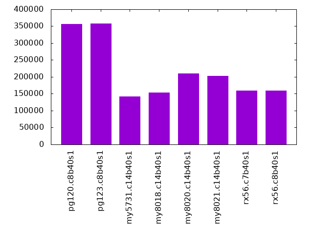
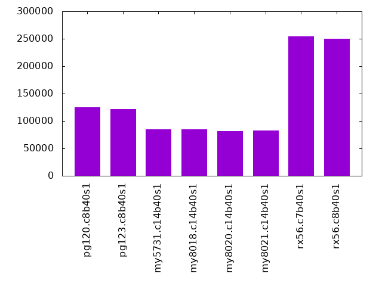
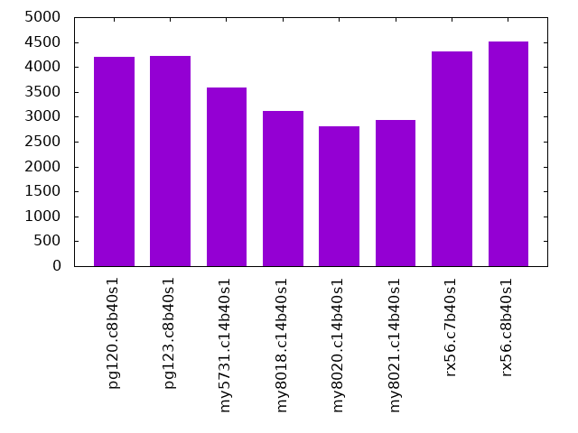
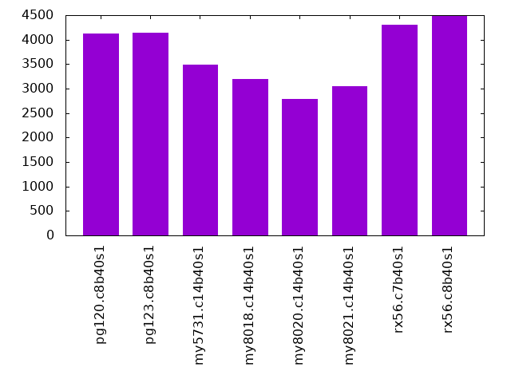
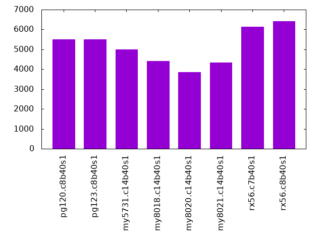

Introduction
This is a report for Linkbench with Linkbench with maxid1=500m. It is generated by scripts. An overview of Linkbench is here. Below, by DBMS, I mean DBMS+version.config. An example is my8020.c10b40 where my means MySQL, 8020 is version 8.0.20 and c10b40 is the name for the configuration file. All configurations are currently stored here.
The test server is a c3.8xlarge host with 20,000 EBS PIOPs, 60G RAM and 16 CPU cores (HT disabled). Clients and the DBMS share one server.
The tested DBMS are:
- pg120.c8b40s1 - Postgres 12.0 with the c8b40s1 config
- pg123.c8b40s1 - Postgres 12.3 with the c8b40s1 config
- my5731.c14b40s1 - MySQL 5.7.31 with InnoDB and the c14b40s1 config
- my8018.c14b40s1 - MySQL 8.0.18 with InnoDB and the c14b40s1 config
- my8020.c14b40s1 - MySQL 8.0.20 with InnoDB and the c14b40s1 config
- my8021.c14b40s1 - MySQL 8.0.21 with InnoDB and the c14b40s1 config
- rx56.c7b40s1 - MySQL 5.6.35 with MyRocks and the c7b40s1 config (no compression)
- rx56.c8b40s1 - MySQL 5.6.35 with MyRocks and the c8b40s1 config (lz4 compression for max level)
Contents
- Summary
- l.pre: load 500 million rows (documents) without secondary index on Linktable
- l.post: create secondary index on Linktable
- L1.P8: transactions with 8 clients, run for 3600 seconds
- L2.P8: transactions with 8 clients, run for 3600 seconds
- L3.P12: transactions with 12 clients, run for 3600 seconds
- L4.P12: transactions with 12 clients, run for 3600 seconds
- L5.P16: transactions with 16 clients, run for 3600 seconds
- L6.P16: transactions with 16 clients, run for 3600 seconds
Summary
Numbers are inserts/s for l.pre, indexed rows/s for l.post and transactions/s for the transaction tests (L*.P*). The range of values is split into 3 steps: bottom 25%, middle 50%, top 25%. Values in the bottom have a red background, values in the top have a green background. The l in l.pre and l.post stands for load. The L in L1.* to L6.* stands for loop and the transaction tests are run in that sequence. The P in L*.P8, L*.P12 and L*.P16 stands for parallel and represents the number of concurrent clients.
| dbms | l.pre | l.post | L1.P8 | L2.P8 | L3.P12 | L4.P12 | L5.P16 | L6.P16 |
|---|---|---|---|---|---|---|---|---|
| pg120.c8b40s1 | 356108 | 124561 | 4207 | 4130 | 5493 | 5669 | 6654 | 6791 |
| pg123.c8b40s1 | 357349 | 122089 | 4228 | 4139 | 5514 | 5573 | 6399 | 6600 |
| my5731.c14b40s1 | 142174 | 85187 | 3593 | 3496 | 4996 | 4877 | 6216 | 6260 |
| my8018.c14b40s1 | 153749 | 84911 | 3116 | 3188 | 4420 | 4383 | 5440 | 5300 |
| my8020.c14b40s1 | 210280 | 81122 | 2806 | 2791 | 3850 | 3920 | 5069 | 5068 |
| my8021.c14b40s1 | 202873 | 82738 | 2927 | 3046 | 4327 | 4367 | 5682 | 5591 |
| rx56.c7b40s1 | 159385 | 254152 | 4305 | 4308 | 6146 | 6110 | 7845 | 7760 |
| rx56.c8b40s1 | 159358 | 249984 | 4517 | 4481 | 6426 | 6362 | 8163 | 8108 |
l.pre
l.pre: load 500 million rows (documents) without secondary index on Linktable.
Inserts/s average
HW performance results normalized by throughput. The legend is here
ips secs rpi rkbpi wkbpi cspi cpupi csecpq dsecpq csec dsec dbgb1 dbgb2 cnf 356108 10659 0.000 0.003 0.649 0.1 81 3.8 0.0 14499 0 681.7 721.7 pg120.c8b40s1 357349 10622 0.000 0.003 0.649 0.1 82 3.7 0.0 14125 0 681.7 721.7 pg123.c8b40s1 142174 26698 0.000 0.000 0.845 0.1 201 2.8 30.0 10592 113753 710.6 767.1 my5731.c14b40s1 153749 24688 0.000 0.000 0.859 0.2 153 3.2 22.7 11998 86035 708.4 779.3 my8018.c14b40s1 210280 18051 0.000 0.000 0.886 0.2 144 3.2 21.3 12034 80748 749.2 827.4 my8020.c14b40s1 202873 18710 0.000 0.000 0.874 0.2 149 3.1 22.1 11700 84008 732.4 805.5 my8021.c14b40s1 159385 23815 0.000 0.001 0.457 0.0 317 2.6 48.0 9812 182173 333.3 371.8 rx56.c7b40s1 159358 23819 0.000 0.001 0.473 0.0 326 2.5 49.4 9555 187373 170.4 212.4 rx56.c8b40s1
HW performance results not normalized by throughput. The legend is here
ips secs rps rmbps wmbps csps cpups cutil dutil vsz rss cnf 356108 10659 136 1 226 37669 28.9 1.360 0.000 0.1 0.0 pg120.c8b40s1 357349 10622 133 1 226 38152 29.5 1.330 0.000 0.1 0.0 pg123.c8b40s1 142174 26698 0 0 117 10252 28.6 0.397 4.261 46.3 43.6 my5731.c14b40s1 153749 24688 0 0 129 32578 23.6 0.486 3.485 45.3 43.8 my8018.c14b40s1 210280 18051 0 0 182 42848 30.3 0.667 4.473 45.3 43.7 my8020.c14b40s1 202873 18710 0 0 173 40753 30.3 0.625 4.490 45.3 43.7 my8021.c14b40s1 159385 23815 11 0 71 6141 50.6 0.412 7.650 24.3 18.2 rx56.c7b40s1 159358 23819 8 0 74 6089 51.9 0.401 7.867 25.1 18.9 rx56.c8b40s1
l.post
l.post: create secondary index on Linktable.
Indexed rows/s average
HW performance results normalized by throughput. The legend is here
ips secs rpi rkbpi wkbpi cspi cpupi csecpq dsecpq csec dsec dbgb1 dbgb2 cnf 124561 30473 0.010 0.163 0.284 0.0 33 0.0 0.0 0 0 918.3 958.4 pg120.c8b40s1 122089 31090 0.010 0.163 0.284 0.0 33 0.0 0.0 0 0 918.3 958.4 pg123.c8b40s1 85187 44558 0.009 0.730 0.827 0.0 18 0.0 33.3 0 126394 913.5 947.1 my5731.c14b40s1 84911 44703 0.009 0.707 0.828 0.0 19 0.0 26.3 0 100010 910.6 944.2 my8018.c14b40s1 81122 46791 0.009 0.698 0.828 0.0 18 0.0 24.5 0 92922 951.4 985.0 my8020.c14b40s1 82738 45877 0.009 0.698 0.828 0.0 17 0.0 25.4 0 96227 934.6 968.1 my8021.c14b40s1 254152 14935 0.003 0.102 0.113 0.0 11 0.0 49.9 0 189436 512.3 513.1 rx56.c7b40s1 249984 15184 0.003 0.079 0.085 0.0 14 0.0 51.8 0 196797 248.9 252.2 rx56.c8b40s1
HW performance results not normalized by throughput. The legend is here
ips secs rps rmbps wmbps csps cpups cutil dutil vsz rss cnf 124561 30473 1266 20 35 2181 4.1 0.000 0.000 NA NA pg120.c8b40s1 122089 31090 1241 19 34 2130 4.0 0.000 0.000 NA NA pg123.c8b40s1 85187 44558 772 61 69 2952 1.5 0.000 2.837 46.7 43.9 my5731.c14b40s1 84911 44703 754 59 69 3318 1.6 0.000 2.237 45.7 44.1 my8018.c14b40s1 81122 46791 714 55 66 3274 1.4 0.000 1.986 45.7 44.1 my8020.c14b40s1 82738 45877 729 56 67 3346 1.4 0.000 2.097 45.7 44.1 my8021.c14b40s1 254152 14935 889 25 28 2164 2.8 0.000 12.684 77.3 42.5 rx56.c7b40s1 249984 15184 716 19 21 1799 3.5 0.000 12.961 78.1 42.6 rx56.c8b40s1
L1.P8
L1.P8: transactions with 8 clients, run for 3600 seconds.
Transactions/s average
HW performance results normalized by throughput. The legend is here
qps secs rpq rkbpq wkbpq cspq cpupq csecpq dsecpq csec dsec dbgb1 dbgb2 cnf 4207 3600 2.685 30.391 8.837 11.6 2077 90.2 -0.1 1366 -1 919.4 959.4 pg120.c8b40s1 4228 3600 2.670 30.275 8.805 11.5 2078 87.9 -0.1 1339 -1 919.4 959.4 pg123.c8b40s1 3593 3600 1.115 17.847 19.372 12.3 1668 159.7 394.9 2065 5108 947.7 981.2 my5731.c14b40s1 3116 3600 1.113 17.803 19.895 20.4 1863 160.6 494.8 1802 5550 941.4 975.1 my8018.c14b40s1 2806 3600 1.114 17.832 20.075 21.4 1641 148.0 468.3 1495 4731 978.9 1012.5 my8020.c14b40s1 2927 3600 1.114 17.830 20.101 20.0 1652 148.2 453.3 1561 4776 963.7 997.3 my8021.c14b40s1 4305 3600 0.865 10.320 1.082 9.2 1621 154.4 321.1 2393 4976 513.4 515.2 rx56.c7b40s1 4517 3600 0.833 6.783 0.985 9.1 2117 152.0 340.6 2472 5538 249.8 251.7 rx56.c8b40s1
HW performance results not normalized by throughput. The legend is here
qps secs rps rmbps wmbps csps cpups cutil dutil vsz rss cnf 4207 3600 11295 125 36 48683 8.7 0.379 -0.000 0.1 0.0 pg120.c8b40s1 4228 3600 11290 125 36 48781 8.8 0.372 -0.000 0.1 0.0 pg123.c8b40s1 3593 3600 4008 63 68 44299 6.0 0.574 1.419 46.7 43.6 my5731.c14b40s1 3116 3600 3467 54 61 63416 5.8 0.500 1.542 45.8 43.8 my8018.c14b40s1 2806 3600 3127 49 55 60180 4.6 0.415 1.314 45.8 43.8 my8020.c14b40s1 2927 3600 3262 51 57 58471 4.8 0.434 1.327 45.8 43.7 my8021.c14b40s1 4305 3600 3722 43 5 39489 7.0 0.665 1.382 85.0 42.3 rx56.c7b40s1 4517 3600 3765 30 4 40926 9.6 0.687 1.538 86.4 42.4 rx56.c8b40s1
Reponse time for Link operations. The legend is here. Metric names that end with 9 are p99, x are max and m are mean. All values are in milliseconds.
al9 alx alm dl9 dlx dlm ul9 ulx ulm cl9 clx clm mg9 mgx mgm gll9 gllx gllm cnf 23 901.8 5.557 26 154.3 6.124 20 219.7 4.993 10 894.3 1.629 10 158.9 1.669 8 895.5 1.356 pg120.c8b40s1 23 330.8 5.530 25 186.0 6.079 20 320.2 4.965 10 310.7 1.624 10 238.3 1.664 8 796.7 1.345 pg123.c8b40s1 28 442.1 8.498 27 435.4 7.968 27 352.2 7.795 7 261.5 1.175 6 247.0 1.101 10 840.8 1.391 my5731.c14b40s1 28 23368.9 10.722 28 23370.5 10.040 27 23363.3 9.951 5 231.3 1.149 5 908.9 1.070 8 4608.6 1.373 my8018.c14b40s1 46 1093.6 11.879 45 640.4 11.043 43 882.1 10.974 9 308.8 1.371 8 470.8 1.229 11 2541.3 1.496 my8020.c14b40s1 40 709.9 11.345 40 538.5 10.559 37 691.5 10.481 7 314.0 1.293 7 1085.4 1.191 9 1699.2 1.460 my8021.c14b40s1 14 229.9 6.520 14 136.8 6.177 12 250.2 6.123 3 237.3 0.830 3 232.0 0.938 9 485.6 1.261 rx56.c7b40s1 12 140.2 6.256 12 139.7 5.931 11 206.4 5.968 3 120.7 0.695 3 233.2 0.870 9 203.4 1.146 rx56.c8b40s1
Reponse time for Node operations. The legend is here. Metric names that end with 9 are p99, x are max and m are mean. All values are in milliseconds.
an9 anx anm un9 unx unm dn9 dnx dnm gn9 gnx gnm cnf 7 116.7 1.826 13 898.7 3.372 12 98.8 3.059 7 898.4 1.282 pg120.c8b40s1 7 120.9 1.810 13 219.6 3.350 12 119.0 3.038 7 317.4 1.279 pg123.c8b40s1 13 181.0 4.247 16 237.4 5.255 14 185.9 5.178 7 431.8 1.213 my5731.c14b40s1 17 23360.3 6.339 18 223.1 7.231 17 93.0 7.113 5 708.1 1.184 my8018.c14b40s1 23 269.9 6.248 27 408.1 7.554 25 159.6 7.347 9 515.6 1.411 my8020.c14b40s1 21 299.9 6.036 24 543.8 7.270 22 226.1 7.086 7 605.0 1.342 my8021.c14b40s1 11 247.3 5.171 12 190.8 5.787 12 110.8 5.787 3 245.6 0.890 rx56.c7b40s1 9 70.9 5.099 10 115.2 5.673 10 83.8 5.664 3 236.6 0.850 rx56.c8b40s1
L2.P8
L2.P8: transactions with 8 clients, run for 3600 seconds.
Transactions/s average
HW performance results normalized by throughput. The legend is here
qps secs rpq rkbpq wkbpq cspq cpupq csecpq dsecpq csec dsec dbgb1 dbgb2 cnf 4130 3600 2.443 25.874 8.641 11.3 2052 89.8 -0.1 1335 -2 919.8 959.8 pg120.c8b40s1 4139 3600 2.443 25.895 8.606 11.3 2031 90.4 0.0 1347 0 919.8 959.8 pg123.c8b40s1 3496 3600 1.112 17.787 18.407 12.3 1769 173.1 396.2 2178 4987 956.3 989.8 my5731.c14b40s1 3188 3600 1.109 17.745 19.329 20.2 1928 172.1 494.1 1976 5671 954.7 988.4 my8018.c14b40s1 2791 3600 1.112 17.791 19.681 21.4 1721 159.5 469.1 1602 4713 990.9 1024.5 my8020.c14b40s1 3046 3600 1.112 17.784 19.462 19.6 1764 161.6 452.6 1772 4963 976.8 1010.4 my8021.c14b40s1 4308 3600 0.861 10.260 1.007 9.2 1748 169.6 327.7 2631 5083 513.9 514.8 rx56.c7b40s1 4481 3600 0.833 6.794 1.013 9.1 2250 168.1 347.6 2712 5607 250.5 251.9 rx56.c8b40s1
HW performance results not normalized by throughput. The legend is here
qps secs rps rmbps wmbps csps cpups cutil dutil vsz rss cnf 4130 3600 10090 104 35 46629 8.5 0.371 -0.001 0.1 0.0 pg120.c8b40s1 4139 3600 10113 105 35 46731 8.4 0.374 0.000 0.1 0.0 pg123.c8b40s1 3496 3600 3886 61 63 43012 6.2 0.605 1.385 46.7 43.6 my5731.c14b40s1 3188 3600 3536 55 60 64341 6.1 0.549 1.575 45.8 43.8 my8018.c14b40s1 2791 3600 3103 48 54 59675 4.8 0.445 1.309 45.8 43.8 my8020.c14b40s1 3046 3600 3386 53 58 59825 5.4 0.492 1.379 45.8 43.7 my8021.c14b40s1 4308 3600 3708 43 4 39711 7.5 0.731 1.412 87.3 42.6 rx56.c7b40s1 4481 3600 3735 30 4 40869 10.1 0.753 1.558 88.6 42.4 rx56.c8b40s1
Reponse time for Link operations. The legend is here. Metric names that end with 9 are p99, x are max and m are mean. All values are in milliseconds.
al9 alx alm dl9 dlx dlm ul9 ulx ulm cl9 clx clm mg9 mgx mgm gll9 gllx gllm cnf 24 212.0 5.940 27 235.1 6.476 20 189.4 4.958 10 229.3 1.634 10 220.2 1.647 10 733.6 1.410 pg120.c8b40s1 23 9652.9 5.950 25 9653.5 6.492 18 9640.3 4.947 10 247.6 1.628 9 515.9 1.634 10 971.7 1.418 pg123.c8b40s1 31 538.6 8.563 30 493.7 8.114 29 634.2 7.882 7 376.8 1.232 7 348.8 1.163 14 780.6 1.500 my5731.c14b40s1 27 452.0 10.243 26 266.9 9.529 25 300.4 9.578 5 146.0 1.133 5 214.0 1.068 10 325.4 1.408 my8018.c14b40s1 48 973.0 11.769 47 794.5 10.988 44 654.1 10.915 9 368.5 1.380 8 419.1 1.252 13 1387.8 1.563 my8020.c14b40s1 34 597.9 10.669 33 519.8 9.946 32 674.1 9.919 7 340.2 1.252 7 295.9 1.159 11 1217.2 1.479 my8021.c14b40s1 12 354.8 6.444 12 236.8 6.105 11 350.3 6.058 3 173.5 0.813 3 192.6 0.937 12 563.4 1.326 rx56.c7b40s1 12 200.6 6.233 12 166.2 5.875 11 167.0 5.950 3 187.7 0.690 3 192.4 0.876 12 197.5 1.227 rx56.c8b40s1
Reponse time for Node operations. The legend is here. Metric names that end with 9 are p99, x are max and m are mean. All values are in milliseconds.
an9 anx anm un9 unx unm dn9 dnx dnm gn9 gnx gnm cnf 7 104.8 1.929 14 176.8 3.454 12 121.0 3.027 8 217.3 1.278 pg120.c8b40s1 7 172.0 1.892 13 9645.6 3.459 12 105.6 2.976 7 486.6 1.270 pg123.c8b40s1 12 185.0 4.171 16 433.0 5.282 16 186.4 5.256 7 382.0 1.258 my5731.c14b40s1 16 181.1 6.111 17 175.1 7.169 16 88.5 7.082 5 273.9 1.168 my8018.c14b40s1 23 273.3 6.348 27 455.3 7.644 27 279.4 7.537 10 457.6 1.412 my8020.c14b40s1 19 189.4 5.872 21 242.8 7.087 20 175.0 6.941 7 337.7 1.285 my8021.c14b40s1 9 112.4 5.108 10 348.9 5.722 10 98.2 5.711 3 176.3 0.882 rx56.c7b40s1 8 164.8 5.072 10 166.8 5.646 10 84.8 5.657 3 175.8 0.849 rx56.c8b40s1
L3.P12
L3.P12: transactions with 12 clients, run for 3600 seconds.
Transactions/s average
HW performance results normalized by throughput. The legend is here
qps secs rpq rkbpq wkbpq cspq cpupq csecpq dsecpq csec dsec dbgb1 dbgb2 cnf 5493 3600 2.474 27.344 8.667 11.4 2756 97.9 -0.1 1936 -2 920.4 960.4 pg120.c8b40s1 5514 3600 2.458 27.018 8.614 11.4 2753 97.1 0.0 1927 0 920.4 960.4 pg123.c8b40s1 4996 3600 1.109 17.736 16.949 11.7 2131 190.6 409.9 3428 7373 966.9 1000.4 my5731.c14b40s1 4420 3600 1.106 17.692 17.773 17.6 2274 188.0 482.8 2992 7683 971.9 1005.5 my8018.c14b40s1 3850 3600 1.109 17.739 17.856 18.9 1829 167.8 449.7 2326 6233 1006.4 1040.0 my8020.c14b40s1 4327 3600 1.109 17.746 17.672 17.4 1920 171.4 437.1 2670 6809 993.8 1027.3 my8021.c14b40s1 6146 3600 0.861 10.254 0.798 8.7 2141 188.5 341.2 4170 7550 514.9 515.8 rx56.c7b40s1 6426 3600 0.839 6.900 0.916 8.7 2572 187.7 362.8 4343 8392 250.8 251.5 rx56.c8b40s1
HW performance results not normalized by throughput. The legend is here
qps secs rps rmbps wmbps csps cpups cutil dutil vsz rss cnf 5493 3600 13591 147 46 62839 15.1 0.538 -0.001 0.1 0.0 pg120.c8b40s1 5514 3600 13555 145 46 62785 15.2 0.535 0.000 0.1 0.0 pg123.c8b40s1 4996 3600 5538 87 83 58417 10.6 0.952 2.048 46.8 43.6 my5731.c14b40s1 4420 3600 4887 76 77 77849 10.1 0.831 2.134 45.9 43.8 my8018.c14b40s1 3850 3600 4269 67 67 72862 7.0 0.646 1.731 45.9 43.8 my8020.c14b40s1 4327 3600 4799 75 75 75241 8.3 0.742 1.891 45.9 43.8 my8021.c14b40s1 6146 3600 5289 62 5 53684 13.2 1.158 2.097 90.9 42.5 rx56.c7b40s1 6426 3600 5391 43 6 55611 16.5 1.206 2.331 93.5 42.6 rx56.c8b40s1
Reponse time for Link operations. The legend is here. Metric names that end with 9 are p99, x are max and m are mean. All values are in milliseconds.
al9 alx alm dl9 dlx dlm ul9 ulx ulm cl9 clx clm mg9 mgx mgm gll9 gllx gllm cnf 29 246.9 6.449 32 191.3 6.969 25 189.4 5.629 12 201.2 1.808 12 213.8 1.847 13 1110.9 1.644 pg120.c8b40s1 28 404.0 6.394 31 246.1 6.941 24 394.0 5.588 12 414.0 1.821 12 329.3 1.839 13 2821.0 1.634 pg123.c8b40s1 32 661.5 8.937 31 358.3 8.461 30 519.7 8.318 7 233.8 1.249 7 271.4 1.215 16 1466.6 1.610 my5731.c14b40s1 29 328.5 11.073 29 242.9 10.313 28 330.6 10.483 6 202.2 1.178 5 205.2 1.127 12 706.7 1.521 my8018.c14b40s1 57 952.0 12.853 55 590.3 11.928 54 793.4 12.024 10 373.4 1.443 9 472.0 1.340 16 2755.8 1.686 my8020.c14b40s1 39 6577.9 11.378 38 627.1 10.575 36 6575.5 10.687 6 533.9 1.233 6 6561.5 1.177 14 2145.3 1.546 my8021.c14b40s1 13 802.3 6.726 14 743.9 6.347 12 798.0 6.311 3 232.1 0.835 3 189.6 0.980 17 582.6 1.453 rx56.c7b40s1 13 264.5 6.472 13 188.7 6.104 12 237.6 6.176 3 156.9 0.709 3 511.5 0.909 17 233.0 1.349 rx56.c8b40s1
Reponse time for Node operations. The legend is here. Metric names that end with 9 are p99, x are max and m are mean. All values are in milliseconds.
an9 anx anm un9 unx unm dn9 dnx dnm gn9 gnx gnm cnf 9 190.0 2.278 17 224.5 3.988 16 98.8 3.539 10 194.4 1.442 pg120.c8b40s1 9 392.2 2.247 17 381.8 3.959 16 172.7 3.523 9 348.2 1.445 pg123.c8b40s1 12 175.1 4.613 16 210.1 5.702 17 165.2 5.685 8 272.9 1.285 my5731.c14b40s1 19 135.8 6.959 19 327.3 8.049 18 89.4 7.956 6 213.0 1.221 my8018.c14b40s1 27 491.4 7.149 31 591.4 8.511 30 326.7 8.359 11 625.3 1.505 my8020.c14b40s1 22 6570.8 6.735 24 3146.1 7.840 23 229.1 7.704 7 6548.8 1.290 my8021.c14b40s1 9 742.1 5.336 11 741.6 5.978 11 123.6 5.976 3 370.8 0.919 rx56.c7b40s1 9 104.1 5.273 11 144.5 5.864 11 176.8 5.857 3 340.0 0.876 rx56.c8b40s1
L4.P12
L4.P12: transactions with 12 clients, run for 3600 seconds.
Transactions/s average
HW performance results normalized by throughput. The legend is here
qps secs rpq rkbpq wkbpq cspq cpupq csecpq dsecpq csec dsec dbgb1 dbgb2 cnf 5669 3600 2.047 19.821 7.832 10.8 2596 98.7 -0.1 2015 -2 920.9 961.0 pg120.c8b40s1 5573 3600 2.062 20.094 7.926 10.9 2594 98.4 0.0 1975 0 920.9 961.0 pg123.c8b40s1 4877 3600 1.104 17.661 16.670 11.7 2282 209.9 411.7 3686 7228 975.6 1009.1 my5731.c14b40s1 4383 3600 1.102 17.630 17.141 17.6 2374 201.5 483.4 3179 7627 981.6 1015.2 my8018.c14b40s1 3920 3600 1.105 17.680 17.467 18.8 1980 183.0 451.0 2582 6364 1018.4 1052.0 my8020.c14b40s1 4367 3600 1.105 17.677 17.106 17.3 2038 185.3 439.3 2913 6906 1004.3 1037.9 my8021.c14b40s1 6110 3600 0.865 10.315 0.896 8.8 2360 208.3 352.2 4582 7747 515.6 517.6 rx56.c7b40s1 6362 3600 0.833 6.828 0.842 8.7 2788 213.3 370.8 4884 8492 251.3 251.8 rx56.c8b40s1
HW performance results not normalized by throughput. The legend is here
qps secs rps rmbps wmbps csps cpups cutil dutil vsz rss cnf 5669 3600 11605 110 43 61503 14.7 0.560 -0.001 0.1 0.0 pg120.c8b40s1 5573 3600 11491 109 43 60611 14.5 0.549 0.000 0.1 0.0 pg123.c8b40s1 4877 3600 5383 84 79 56929 11.1 1.024 2.008 46.8 43.6 my5731.c14b40s1 4383 3600 4830 75 73 76948 10.4 0.883 2.119 45.9 43.8 my8018.c14b40s1 3920 3600 4332 68 67 73759 7.8 0.717 1.768 45.9 43.8 my8020.c14b40s1 4367 3600 4825 75 73 75595 8.9 0.809 1.918 45.9 43.8 my8021.c14b40s1 6110 3600 5283 62 5 53641 14.4 1.273 2.152 94.0 42.6 rx56.c7b40s1 6362 3600 5298 42 5 55286 17.7 1.357 2.359 96.8 42.6 rx56.c8b40s1
Reponse time for Link operations. The legend is here. Metric names that end with 9 are p99, x are max and m are mean. All values are in milliseconds.
al9 alx alm dl9 dlx dlm ul9 ulx ulm cl9 clx clm mg9 mgx mgm gll9 gllx gllm cnf 25 217.8 6.180 27 180.9 6.699 21 247.7 5.384 11 214.7 1.741 11 164.0 1.766 14 911.3 1.660 pg120.c8b40s1 27 269.7 6.231 29 224.3 6.745 22 328.1 5.413 12 246.3 1.797 11 274.5 1.811 15 2169.4 1.688 pg123.c8b40s1 34 372.4 8.889 33 530.7 8.476 31 539.9 8.328 8 303.9 1.292 8 321.9 1.267 20 831.5 1.730 my5731.c14b40s1 30 315.8 11.008 29 284.3 10.271 28 396.1 10.461 6 225.2 1.193 6 182.4 1.155 16 671.5 1.608 my8018.c14b40s1 55 889.0 12.479 52 751.0 11.523 51 767.8 11.697 8 335.8 1.412 8 416.2 1.328 19 1181.1 1.731 my8020.c14b40s1 38 806.5 11.071 37 492.5 10.316 36 799.2 10.447 6 394.0 1.234 6 499.9 1.187 17 1065.9 1.609 my8021.c14b40s1 13 239.4 6.683 13 170.1 6.293 12 177.1 6.281 3 222.9 0.821 3 228.8 0.980 22 391.5 1.550 rx56.c7b40s1 13 282.8 6.437 13 255.7 6.045 11 180.3 6.142 3 252.4 0.700 3 255.2 0.910 23 416.3 1.467 rx56.c8b40s1
Reponse time for Node operations. The legend is here. Metric names that end with 9 are p99, x are max and m are mean. All values are in milliseconds.
an9 anx anm un9 unx unm dn9 dnx dnm gn9 gnx gnm cnf 8 119.0 2.185 15 295.4 3.846 14 121.6 3.364 9 291.0 1.391 pg120.c8b40s1 8 149.3 2.158 16 224.6 3.857 14 247.0 3.382 10 269.8 1.431 pg123.c8b40s1 13 227.4 4.631 17 250.8 5.772 17 184.5 5.717 9 321.2 1.337 my5731.c14b40s1 17 286.1 6.962 20 291.8 8.126 19 125.1 8.034 6 229.8 1.224 my8018.c14b40s1 25 297.6 6.993 28 457.8 8.303 28 327.1 8.197 9 500.8 1.474 my8020.c14b40s1 20 424.9 6.582 23 429.4 7.764 22 251.0 7.680 7 441.1 1.279 my8021.c14b40s1 9 121.9 5.316 11 175.6 5.949 11 163.4 5.950 3 231.3 0.911 rx56.c7b40s1 9 104.6 5.246 11 130.8 5.835 11 117.7 5.830 3 362.7 0.872 rx56.c8b40s1
L5.P16
L5.P16: transactions with 16 clients, run for 3600 seconds.
Transactions/s average

HW performance results normalized by throughput. The legend is here
qps secs rpq rkbpq wkbpq cspq cpupq csecpq dsecpq csec dsec dbgb1 dbgb2 cnf 6654 3600 2.182 22.012 8.854 11.1 3305 104.7 -0.1 2508 -2 921.6 961.7 pg120.c8b40s1 6399 3600 2.213 22.435 8.918 11.2 3287 103.8 0.0 2392 0 921.6 961.6 pg123.c8b40s1 6216 3600 1.097 17.550 15.695 11.2 2690 232.5 425.3 5203 9517 984.7 1018.3 my5731.c14b40s1 5440 3600 1.098 17.560 15.894 16.0 2763 223.1 480.9 4369 9417 990.3 1023.9 my8018.c14b40s1 5069 3600 1.103 17.642 16.368 17.2 2206 197.5 441.9 3604 8064 1027.2 1060.8 my8020.c14b40s1 5682 3600 1.099 17.577 16.173 15.9 2283 201.5 433.7 4122 8872 1013.6 1047.2 my8021.c14b40s1 7845 3600 0.866 10.356 0.790 8.5 2736 230.3 368.5 6503 10407 516.7 518.6 rx56.c7b40s1 8163 3600 0.834 6.867 0.725 8.4 3100 229.9 385.8 6756 11338 252.3 252.9 rx56.c8b40s1
HW performance results not normalized by throughput. The legend is here
qps secs rps rmbps wmbps csps cpups cutil dutil vsz rss cnf 6654 3600 14519 143 58 73757 22.0 0.697 -0.001 0.1 0.0 pg120.c8b40s1 6399 3600 14161 140 56 71352 21.0 0.664 0.000 0.1 0.0 pg123.c8b40s1 6216 3600 6818 107 95 69902 16.7 1.445 2.644 46.9 43.6 my5731.c14b40s1 5440 3600 5970 93 84 87048 15.0 1.214 2.616 46.1 43.8 my8018.c14b40s1 5069 3600 5589 87 81 87078 11.2 1.001 2.240 46.1 43.8 my8020.c14b40s1 5682 3600 6242 98 90 90507 13.0 1.145 2.464 46.1 43.8 my8021.c14b40s1 7845 3600 6795 79 6 66423 21.5 1.806 2.891 98.3 42.8 rx56.c7b40s1 8163 3600 6811 55 6 68381 25.3 1.877 3.149 101.6 42.9 rx56.c8b40s1
Reponse time for Link operations. The legend is here. Metric names that end with 9 are p99, x are max and m are mean. All values are in milliseconds.
al9 alx alm dl9 dlx dlm ul9 ulx ulm cl9 clx clm mg9 mgx mgm gll9 gllx gllm cnf 32 220.6 7.545 34 255.3 7.864 26 316.2 6.275 12 189.3 1.892 12 238.8 1.919 16 1052.9 1.894 pg120.c8b40s1 37 798.4 7.845 41 221.3 8.206 29 798.3 6.443 14 273.9 1.993 13 749.3 2.009 18 1106.3 1.951 pg123.c8b40s1 30 535.4 9.169 29 398.8 8.749 29 555.5 8.648 7 271.1 1.314 7 286.7 1.306 23 1346.1 1.863 my5731.c14b40s1 33 333.4 11.712 32 711.5 10.948 31 336.4 11.186 6 155.0 1.255 6 284.3 1.226 20 726.3 1.770 my8018.c14b40s1 57 939.9 12.784 54 921.0 11.850 55 769.9 12.118 9 644.7 1.406 8 1068.3 1.345 22 2061.3 1.819 my8020.c14b40s1 36 629.4 11.213 35 720.6 10.519 34 653.9 10.704 6 604.7 1.211 6 578.1 1.181 19 1489.6 1.672 my8021.c14b40s1 13 258.8 6.893 13 134.3 6.484 12 285.8 6.480 3 287.7 0.833 3 166.8 1.006 28 630.1 1.680 rx56.c7b40s1 13 266.1 6.640 13 155.4 6.225 12 262.4 6.335 3 188.0 0.715 4 262.5 0.945 29 332.4 1.587 rx56.c8b40s1
Reponse time for Node operations. The legend is here. Metric names that end with 9 are p99, x are max and m are mean. All values are in milliseconds.
an9 anx anm un9 unx unm dn9 dnx dnm gn9 gnx gnm cnf 9 78.9 2.393 17 219.7 4.198 17 126.4 3.869 10 292.6 1.540 pg120.c8b40s1 9 168.4 2.369 19 791.3 4.265 19 191.5 3.951 12 769.0 1.627 pg123.c8b40s1 13 234.4 5.026 18 410.9 6.218 17 127.8 6.141 8 405.7 1.380 my5731.c14b40s1 18 256.5 7.583 21 313.8 8.827 20 175.1 8.728 7 320.5 1.311 my8018.c14b40s1 26 340.2 7.441 31 415.4 8.810 30 270.2 8.727 10 505.5 1.485 my8020.c14b40s1 20 331.3 7.071 23 374.4 8.289 22 222.6 8.154 7 387.2 1.286 my8021.c14b40s1 10 129.0 5.498 11 171.4 6.141 12 110.3 6.145 3 289.6 0.929 rx56.c7b40s1 10 86.3 5.411 11 292.5 6.021 11 136.1 6.022 4 286.5 0.892 rx56.c8b40s1
L6.P16
L6.P16: transactions with 16 clients, run for 3600 seconds.
Transactions/s average
HW performance results normalized by throughput. The legend is here
qps secs rpq rkbpq wkbpq cspq cpupq csecpq dsecpq csec dsec dbgb1 dbgb2 cnf 6791 3600 2.112 20.749 8.959 11.0 3390 106.2 -0.1 2596 -2 922.5 962.5 pg120.c8b40s1 6600 3600 2.128 20.926 9.055 11.1 3359 105.1 0.0 2498 0 922.4 962.5 pg123.c8b40s1 6260 3600 1.090 17.447 15.278 11.2 2825 248.7 426.4 5605 9609 992.3 1025.9 my5731.c14b40s1 5300 3600 1.092 17.476 15.646 16.1 2867 237.2 483.5 4526 9225 997.4 1031.1 my8018.c14b40s1 5068 3600 1.098 17.572 15.946 17.1 2347 214.9 443.8 3921 8097 1034.6 1068.2 my8020.c14b40s1 5591 3600 1.095 17.521 15.711 15.9 2448 219.7 436.8 4422 8792 1021.2 1054.8 my8021.c14b40s1 7760 3600 0.860 10.267 0.696 8.5 2904 246.9 374.5 6899 10463 517.7 519.8 rx56.c7b40s1 8108 3600 0.833 6.853 0.683 8.4 3275 246.5 394.0 7194 11500 253.1 253.8 rx56.c8b40s1
HW performance results not normalized by throughput. The legend is here
qps secs rps rmbps wmbps csps cpups cutil dutil vsz rss cnf 6791 3600 14344 138 59 74997 23.0 0.721 -0.001 0.1 0.0 pg120.c8b40s1 6600 3600 14042 135 58 73102 22.2 0.694 0.000 0.1 0.0 pg123.c8b40s1 6260 3600 6826 107 93 69849 17.7 1.557 2.669 46.9 43.6 my5731.c14b40s1 5300 3600 5789 90 81 85227 15.2 1.257 2.562 46.1 43.8 my8018.c14b40s1 5068 3600 5566 87 79 86489 11.9 1.089 2.249 46.1 43.8 my8020.c14b40s1 5591 3600 6123 96 86 89021 13.7 1.228 2.442 46.1 43.8 my8021.c14b40s1 7760 3600 6672 78 5 65868 22.5 1.916 2.906 101.9 42.8 rx56.c7b40s1 8108 3600 6754 54 5 68075 26.6 1.998 3.194 104.6 43.0 rx56.c8b40s1
Reponse time for Link operations. The legend is here. Metric names that end with 9 are p99, x are max and m are mean. All values are in milliseconds.
al9 alx alm dl9 dlx dlm ul9 ulx ulm cl9 clx clm mg9 mgx mgm gll9 gllx gllm cnf 30 289.4 6.845 33 288.6 7.274 26 261.1 6.102 12 259.8 1.891 12 264.5 1.892 18 925.5 1.983 pg120.c8b40s1 32 3514.2 7.058 37 420.0 7.497 27 3504.4 6.231 13 200.9 1.957 12 3478.4 1.952 19 3477.8 2.021 pg123.c8b40s1 29 516.2 8.903 28 311.2 8.552 27 486.0 8.436 7 212.3 1.300 7 258.9 1.303 27 674.3 1.928 my5731.c14b40s1 35 518.5 11.762 34 403.8 11.025 33 366.9 11.262 7 269.1 1.304 7 262.4 1.278 25 528.7 1.882 my8018.c14b40s1 51 849.0 12.311 50 836.6 11.550 49 1052.7 11.745 9 363.2 1.410 9 1085.5 1.356 24 2622.1 1.902 my8020.c14b40s1 36 675.7 11.155 35 687.6 10.483 35 850.3 10.679 6 341.5 1.238 6 489.1 1.209 24 2182.0 1.788 my8021.c14b40s1 13 158.9 6.887 13 148.9 6.448 12 187.0 6.475 3 134.2 0.832 4 282.9 1.014 35 459.2 1.774 rx56.c7b40s1 13 276.7 6.624 13 141.4 6.206 12 260.6 6.326 3 260.9 0.706 3 260.7 0.943 37 325.4 1.673 rx56.c8b40s1
Reponse time for Node operations. The legend is here. Metric names that end with 9 are p99, x are max and m are mean. All values are in milliseconds.
an9 anx anm un9 unx unm dn9 dnx dnm gn9 gnx gnm cnf 10 67.5 2.449 17 249.5 4.187 17 70.4 3.910 10 279.4 1.504 pg120.c8b40s1 10 408.4 2.459 19 3484.7 4.271 18 110.8 3.980 11 3479.5 1.566 pg123.c8b40s1 14 137.5 5.030 18 307.6 6.216 17 166.3 6.111 8 444.1 1.369 my5731.c14b40s1 20 169.1 7.655 24 277.1 8.963 22 154.7 8.841 8 281.3 1.378 my8018.c14b40s1 26 304.6 7.468 32 369.0 8.906 28 309.6 8.643 11 604.4 1.535 my8020.c14b40s1 20 658.6 7.111 25 659.1 8.378 23 379.2 8.226 7 511.4 1.322 my8021.c14b40s1 10 107.3 5.481 12 128.2 6.130 12 164.1 6.133 4 296.6 0.934 rx56.c7b40s1 10 114.5 5.405 11 246.6 6.005 11 101.5 6.009 3 264.4 0.884 rx56.c8b40s1
l.pre
l.pre: load 500 million rows (documents) without secondary index on Linktable
HW performance results for all DBMS tested, not just the ones listed above. Most are normaolized by throughput. The legend for results is here.
ips secs rpi rkbpi wkbpi cspi cpupi csecpq dsecpq csec dsec dbgb1 dbgb2 cnf 357349 10622 0.000 0.003 0.649 0.1 82 3.7 0.0 14125 0 681.7 721.7 pg123.c8b40s1 202873 18710 0.000 0.000 0.874 0.2 149 3.1 22.1 11700 84008 732.4 805.5 my8021.c14b40s1 159358 23819 0.000 0.001 0.473 0.0 326 2.5 49.4 9555 187373 170.4 212.4 rx56.c8b40s1 - 356108 10659 0.000 0.003 0.649 0.1 81 3.8 0.0 14499 0 681.7 721.7 pg120.c8b40s1 357349 10622 0.000 0.003 0.649 0.1 82 3.7 0.0 14125 0 681.7 721.7 pg123.c8b40s1 - 142174 26698 0.000 0.000 0.845 0.1 201 2.8 30.0 10592 113753 710.6 767.1 my5731.c14b40s1 153749 24688 0.000 0.000 0.859 0.2 153 3.2 22.7 11998 86035 708.4 779.3 my8018.c14b40s1 210280 18051 0.000 0.000 0.886 0.2 144 3.2 21.3 12034 80748 749.2 827.4 my8020.c14b40s1 202873 18710 0.000 0.000 0.874 0.2 149 3.1 22.1 11700 84008 732.4 805.5 my8021.c14b40s1 - 99496 38150 0.000 0.000 0.885 0.1 202 2.6 30.7 9851 116669 771.7 825.5 my5731.c15b40s1 103337 36732 0.000 0.000 0.887 0.3 160 3.1 24.9 11777 94475 739.4 807.2 my8018.c15b40s1 69907 54297 0.000 0.000 0.902 0.3 152 3.1 23.8 11624 90451 775.3 845.3 my8020.c15b40s1 67659 56101 0.000 0.000 0.914 0.3 172 3.0 27.2 11557 103361 786.9 855.8 my8021.c15b40s1 - 159385 23815 0.000 0.001 0.457 0.0 317 2.6 48.0 9812 182173 333.3 371.8 rx56.c7b40s1 159358 23819 0.000 0.001 0.473 0.0 326 2.5 49.4 9555 187373 170.4 212.4 rx56.c8b40s1
HW performance results for all DBMS tested, not just the ones listed above. Not normalized by throughput. The legend for results is here.
ips secs rps rmbps wmbps csps cpups cutil dutil vsz rss cnf 357349 10622 133 1 226 38152 29.5 1.330 0.000 0.1 0.0 pg123.c8b40s1 202873 18710 0 0 173 40753 30.3 0.625 4.490 45.3 43.7 my8021.c14b40s1 159358 23819 8 0 74 6089 51.9 0.401 7.867 25.1 18.9 rx56.c8b40s1 - 356108 10659 136 1 226 37669 28.9 1.360 0.000 0.1 0.0 pg120.c8b40s1 357349 10622 133 1 226 38152 29.5 1.330 0.000 0.1 0.0 pg123.c8b40s1 - 142174 26698 0 0 117 10252 28.6 0.397 4.261 46.3 43.6 my5731.c14b40s1 153749 24688 0 0 129 32578 23.6 0.486 3.485 45.3 43.8 my8018.c14b40s1 210280 18051 0 0 182 42848 30.3 0.667 4.473 45.3 43.7 my8020.c14b40s1 202873 18710 0 0 173 40753 30.3 0.625 4.490 45.3 43.7 my8021.c14b40s1 - 99496 38150 0 0 86 12838 20.1 0.258 3.058 48.7 46.1 my5731.c15b40s1 103337 36732 0 0 90 29430 16.5 0.321 2.572 48.3 46.3 my8018.c15b40s1 69907 54297 0 0 62 20626 10.6 0.214 1.666 48.3 46.3 my8020.c15b40s1 67659 56101 0 0 60 20719 11.6 0.206 1.842 48.3 46.2 my8021.c15b40s1 - 159385 23815 11 0 71 6141 50.6 0.412 7.650 24.3 18.2 rx56.c7b40s1 159358 23819 8 0 74 6089 51.9 0.401 7.867 25.1 18.9 rx56.c8b40s1
l.post
l.post: create secondary index on Linktable
HW performance results for all DBMS tested, not just the ones listed above. Most are normaolized by throughput. The legend for results is here.
ips secs rpi rkbpi wkbpi cspi cpupi csecpq dsecpq csec dsec dbgb1 dbgb2 cnf 122089 31090 0.010 0.163 0.284 0.0 33 0.0 0.0 0 0 918.3 958.4 pg123.c8b40s1 82738 45877 0.009 0.698 0.828 0.0 17 0.0 25.4 0 96227 934.6 968.1 my8021.c14b40s1 249984 15184 0.003 0.079 0.085 0.0 14 0.0 51.8 0 196797 248.9 252.2 rx56.c8b40s1 - 124561 30473 0.010 0.163 0.284 0.0 33 0.0 0.0 0 0 918.3 958.4 pg120.c8b40s1 122089 31090 0.010 0.163 0.284 0.0 33 0.0 0.0 0 0 918.3 958.4 pg123.c8b40s1 - 85187 44558 0.009 0.730 0.827 0.0 18 0.0 33.3 0 126394 913.5 947.1 my5731.c14b40s1 84911 44703 0.009 0.707 0.828 0.0 19 0.0 26.3 0 100010 910.6 944.2 my8018.c14b40s1 81122 46791 0.009 0.698 0.828 0.0 18 0.0 24.5 0 92922 951.4 985.0 my8020.c14b40s1 82738 45877 0.009 0.698 0.828 0.0 17 0.0 25.4 0 96227 934.6 968.1 my8021.c14b40s1 - 68450 55453 0.013 0.719 0.830 0.0 15 0.0 33.8 0 128252 980.8 1014.3 my5731.c15b40s1 67706 56062 0.013 0.718 0.833 0.1 18 0.0 29.1 0 110328 945.3 979.0 my8018.c15b40s1 71638 52985 0.013 0.719 0.844 0.1 16 0.0 27.4 0 104172 981.2 1018.1 my8020.c15b40s1 66109 57417 0.013 0.717 0.842 0.1 18 0.0 31.5 0 119429 992.9 1029.8 my8021.c15b40s1 - 254152 14935 0.003 0.102 0.113 0.0 11 0.0 49.9 0 189436 512.3 513.1 rx56.c7b40s1 249984 15184 0.003 0.079 0.085 0.0 14 0.0 51.8 0 196797 248.9 252.2 rx56.c8b40s1
HW performance results for all DBMS tested, not just the ones listed above. Not normalized by throughput. The legend for results is here.
ips secs rps rmbps wmbps csps cpups cutil dutil vsz rss cnf 122089 31090 1241 19 34 2130 4.0 0.000 0.000 NA NA pg123.c8b40s1 82738 45877 729 56 67 3346 1.4 0.000 2.097 45.7 44.1 my8021.c14b40s1 249984 15184 716 19 21 1799 3.5 0.000 12.961 78.1 42.6 rx56.c8b40s1 - 124561 30473 1266 20 35 2181 4.1 0.000 0.000 NA NA pg120.c8b40s1 122089 31090 1241 19 34 2130 4.0 0.000 0.000 NA NA pg123.c8b40s1 - 85187 44558 772 61 69 2952 1.5 0.000 2.837 46.7 43.9 my5731.c14b40s1 84911 44703 754 59 69 3318 1.6 0.000 2.237 45.7 44.1 my8018.c14b40s1 81122 46791 714 55 66 3274 1.4 0.000 1.986 45.7 44.1 my8020.c14b40s1 82738 45877 729 56 67 3346 1.4 0.000 2.097 45.7 44.1 my8021.c14b40s1 - 68450 55453 893 48 56 3311 1.0 0.000 2.313 49.4 46.7 my5731.c15b40s1 67706 56062 881 47 55 4827 1.3 0.000 1.968 49.2 46.9 my8018.c15b40s1 71638 52985 934 50 59 5355 1.2 0.000 1.966 49.1 46.9 my8020.c15b40s1 66109 57417 860 46 54 4954 1.2 0.000 2.080 49.1 46.9 my8021.c15b40s1 - 254152 14935 889 25 28 2164 2.8 0.000 12.684 77.3 42.5 rx56.c7b40s1 249984 15184 716 19 21 1799 3.5 0.000 12.961 78.1 42.6 rx56.c8b40s1
L1.P8
L1.P8: transactions with 8 clients, run for 3600 seconds
HW performance results for all DBMS tested, not just the ones listed above. Most are normaolized by throughput. The legend for results is here.
qps secs rpq rkbpq wkbpq cspq cpupq csecpq dsecpq csec dsec dbgb1 dbgb2 cnf 4228 3600 2.670 30.275 8.805 11.5 2078 87.9 -0.1 1339 -1 919.4 959.4 pg123.c8b40s1 2927 3600 1.114 17.830 20.101 20.0 1652 148.2 453.3 1561 4776 963.7 997.3 my8021.c14b40s1 4517 3600 0.833 6.783 0.985 9.1 2117 152.0 340.6 2472 5538 249.8 251.7 rx56.c8b40s1 - 4207 3600 2.685 30.391 8.837 11.6 2077 90.2 -0.1 1366 -1 919.4 959.4 pg120.c8b40s1 4228 3600 2.670 30.275 8.805 11.5 2078 87.9 -0.1 1339 -1 919.4 959.4 pg123.c8b40s1 - 3593 3600 1.115 17.847 19.372 12.3 1668 159.7 394.9 2065 5108 947.7 981.2 my5731.c14b40s1 3116 3600 1.113 17.803 19.895 20.4 1863 160.6 494.8 1802 5550 941.4 975.1 my8018.c14b40s1 2806 3600 1.114 17.832 20.075 21.4 1641 148.0 468.3 1495 4731 978.9 1012.5 my8020.c14b40s1 2927 3600 1.114 17.830 20.101 20.0 1652 148.2 453.3 1561 4776 963.7 997.3 my8021.c14b40s1 - 3826 3600 1.157 9.254 10.891 12.4 1392 150.7 356.6 2076 4911 995.7 1029.2 my5731.c15b40s1 3324 3600 1.155 9.242 12.079 20.2 1737 155.0 477.1 1855 5709 983.1 1016.7 my8018.c15b40s1 3339 3600 1.158 9.267 11.953 20.5 1620 151.0 462.3 1815 5557 1019.1 1056.0 my8020.c15b40s1 3258 3600 1.160 9.283 12.148 19.4 1799 155.4 472.7 1822 5544 1030.3 1067.3 my8021.c15b40s1 - 4305 3600 0.865 10.320 1.082 9.2 1621 154.4 321.1 2393 4976 513.4 515.2 rx56.c7b40s1 4517 3600 0.833 6.783 0.985 9.1 2117 152.0 340.6 2472 5538 249.8 251.7 rx56.c8b40s1
HW performance results for all DBMS tested, not just the ones listed above. Not normalized by throughput. The legend for results is here.
qps secs rps rmbps wmbps csps cpups cutil dutil vsz rss cnf 4228 3600 11290 125 36 48781 8.8 0.372 -0.000 0.1 0.0 pg123.c8b40s1 2927 3600 3262 51 57 58471 4.8 0.434 1.327 45.8 43.7 my8021.c14b40s1 4517 3600 3765 30 4 40926 9.6 0.687 1.538 86.4 42.4 rx56.c8b40s1 - 4207 3600 11295 125 36 48683 8.7 0.379 -0.000 0.1 0.0 pg120.c8b40s1 4228 3600 11290 125 36 48781 8.8 0.372 -0.000 0.1 0.0 pg123.c8b40s1 - 3593 3600 4008 63 68 44299 6.0 0.574 1.419 46.7 43.6 my5731.c14b40s1 3116 3600 3467 54 61 63416 5.8 0.500 1.542 45.8 43.8 my8018.c14b40s1 2806 3600 3127 49 55 60180 4.6 0.415 1.314 45.8 43.8 my8020.c14b40s1 2927 3600 3262 51 57 58471 4.8 0.434 1.327 45.8 43.7 my8021.c14b40s1 - 3826 3600 4426 35 41 47294 5.3 0.577 1.364 49.4 46.1 my5731.c15b40s1 3324 3600 3840 30 39 67148 5.8 0.515 1.586 49.2 46.3 my8018.c15b40s1 3339 3600 3868 30 39 68528 5.4 0.504 1.544 49.2 46.3 my8020.c15b40s1 3258 3600 3781 30 39 63210 5.9 0.506 1.540 49.1 46.2 my8021.c15b40s1 - 4305 3600 3722 43 5 39489 7.0 0.665 1.382 85.0 42.3 rx56.c7b40s1 4517 3600 3765 30 4 40926 9.6 0.687 1.538 86.4 42.4 rx56.c8b40s1
L2.P8
L2.P8: transactions with 8 clients, run for 3600 seconds
HW performance results for all DBMS tested, not just the ones listed above. Most are normaolized by throughput. The legend for results is here.
qps secs rpq rkbpq wkbpq cspq cpupq csecpq dsecpq csec dsec dbgb1 dbgb2 cnf 4139 3600 2.443 25.895 8.606 11.3 2031 90.4 0.0 1347 0 919.8 959.8 pg123.c8b40s1 3046 3600 1.112 17.784 19.462 19.6 1764 161.6 452.6 1772 4963 976.8 1010.4 my8021.c14b40s1 4481 3600 0.833 6.794 1.013 9.1 2250 168.1 347.6 2712 5607 250.5 251.9 rx56.c8b40s1 - 4130 3600 2.443 25.874 8.641 11.3 2052 89.8 -0.1 1335 -2 919.8 959.8 pg120.c8b40s1 4139 3600 2.443 25.895 8.606 11.3 2031 90.4 0.0 1347 0 919.8 959.8 pg123.c8b40s1 - 3496 3600 1.112 17.787 18.407 12.3 1769 173.1 396.2 2178 4987 956.3 989.8 my5731.c14b40s1 3188 3600 1.109 17.745 19.329 20.2 1928 172.1 494.1 1976 5671 954.7 988.4 my8018.c14b40s1 2791 3600 1.112 17.791 19.681 21.4 1721 159.5 469.1 1602 4713 990.9 1024.5 my8020.c14b40s1 3046 3600 1.112 17.784 19.462 19.6 1764 161.6 452.6 1772 4963 976.8 1010.4 my8021.c14b40s1 - 3839 3600 1.154 9.235 10.654 12.3 1504 167.2 359.5 2311 4969 1001.5 1035.0 my5731.c15b40s1 3287 3600 1.154 9.228 11.070 20.3 1812 167.4 478.8 1981 5666 988.1 1021.7 my8018.c15b40s1 3320 3600 1.152 9.218 11.007 20.5 1713 161.0 463.3 1925 5537 1024.2 1061.1 my8020.c15b40s1 3274 3600 1.152 9.216 10.948 19.3 1872 168.2 472.1 1983 5564 1035.4 1072.3 my8021.c15b40s1 - 4308 3600 0.861 10.260 1.007 9.2 1748 169.6 327.7 2631 5083 513.9 514.8 rx56.c7b40s1 4481 3600 0.833 6.794 1.013 9.1 2250 168.1 347.6 2712 5607 250.5 251.9 rx56.c8b40s1
HW performance results for all DBMS tested, not just the ones listed above. Not normalized by throughput. The legend for results is here.
qps secs rps rmbps wmbps csps cpups cutil dutil vsz rss cnf 4139 3600 10113 105 35 46731 8.4 0.374 0.000 0.1 0.0 pg123.c8b40s1 3046 3600 3386 53 58 59825 5.4 0.492 1.379 45.8 43.7 my8021.c14b40s1 4481 3600 3735 30 4 40869 10.1 0.753 1.558 88.6 42.4 rx56.c8b40s1 - 4130 3600 10090 104 35 46629 8.5 0.371 -0.001 0.1 0.0 pg120.c8b40s1 4139 3600 10113 105 35 46731 8.4 0.374 0.000 0.1 0.0 pg123.c8b40s1 - 3496 3600 3886 61 63 43012 6.2 0.605 1.385 46.7 43.6 my5731.c14b40s1 3188 3600 3536 55 60 64341 6.1 0.549 1.575 45.8 43.8 my8018.c14b40s1 2791 3600 3103 48 54 59675 4.8 0.445 1.309 45.8 43.8 my8020.c14b40s1 3046 3600 3386 53 58 59825 5.4 0.492 1.379 45.8 43.7 my8021.c14b40s1 - 3839 3600 4432 35 40 47393 5.8 0.642 1.380 49.4 46.1 my5731.c15b40s1 3287 3600 3792 30 36 66765 6.0 0.550 1.574 49.2 46.3 my8018.c15b40s1 3320 3600 3826 30 36 68010 5.7 0.535 1.538 49.2 46.3 my8020.c15b40s1 3274 3600 3772 29 35 63131 6.1 0.551 1.546 49.1 46.2 my8021.c15b40s1 - 4308 3600 3708 43 4 39711 7.5 0.731 1.412 87.3 42.6 rx56.c7b40s1 4481 3600 3735 30 4 40869 10.1 0.753 1.558 88.6 42.4 rx56.c8b40s1
L3.P12
L3.P12: transactions with 12 clients, run for 3600 seconds
HW performance results for all DBMS tested, not just the ones listed above. Most are normaolized by throughput. The legend for results is here.
qps secs rpq rkbpq wkbpq cspq cpupq csecpq dsecpq csec dsec dbgb1 dbgb2 cnf 5514 3600 2.458 27.018 8.614 11.4 2753 97.1 0.0 1927 0 920.4 960.4 pg123.c8b40s1 4327 3600 1.109 17.746 17.672 17.4 1920 171.4 437.1 2670 6809 993.8 1027.3 my8021.c14b40s1 6426 3600 0.839 6.900 0.916 8.7 2572 187.7 362.8 4343 8392 250.8 251.5 rx56.c8b40s1 - 5493 3600 2.474 27.344 8.667 11.4 2756 97.9 -0.1 1936 -2 920.4 960.4 pg120.c8b40s1 5514 3600 2.458 27.018 8.614 11.4 2753 97.1 0.0 1927 0 920.4 960.4 pg123.c8b40s1 - 4996 3600 1.109 17.736 16.949 11.7 2131 190.6 409.9 3428 7373 966.9 1000.4 my5731.c14b40s1 4420 3600 1.106 17.692 17.773 17.6 2274 188.0 482.8 2992 7683 971.9 1005.5 my8018.c14b40s1 3850 3600 1.109 17.739 17.856 18.9 1829 167.8 449.7 2326 6233 1006.4 1040.0 my8020.c14b40s1 4327 3600 1.109 17.746 17.672 17.4 1920 171.4 437.1 2670 6809 993.8 1027.3 my8021.c14b40s1 - 5623 3600 1.153 9.223 9.656 11.7 1703 181.1 362.6 3665 7340 1009.1 1042.6 my5731.c15b40s1 4680 3600 1.149 9.193 9.932 17.7 2065 181.6 463.9 3059 7816 994.7 1028.3 my8018.c15b40s1 4718 3600 1.152 9.218 9.741 18.0 1942 177.9 445.5 3022 7566 1030.7 1067.7 my8020.c15b40s1 4518 3600 1.152 9.220 9.846 17.4 2144 185.4 465.6 3015 7573 1041.7 1078.7 my8021.c15b40s1 - 6146 3600 0.861 10.254 0.798 8.7 2141 188.5 341.2 4170 7550 514.9 515.8 rx56.c7b40s1 6426 3600 0.839 6.900 0.916 8.7 2572 187.7 362.8 4343 8392 250.8 251.5 rx56.c8b40s1
HW performance results for all DBMS tested, not just the ones listed above. Not normalized by throughput. The legend for results is here.
qps secs rps rmbps wmbps csps cpups cutil dutil vsz rss cnf 5514 3600 13555 145 46 62785 15.2 0.535 0.000 0.1 0.0 pg123.c8b40s1 4327 3600 4799 75 75 75241 8.3 0.742 1.891 45.9 43.8 my8021.c14b40s1 6426 3600 5391 43 6 55611 16.5 1.206 2.331 93.5 42.6 rx56.c8b40s1 - 5493 3600 13591 147 46 62839 15.1 0.538 -0.001 0.1 0.0 pg120.c8b40s1 5514 3600 13555 145 46 62785 15.2 0.535 0.000 0.1 0.0 pg123.c8b40s1 - 4996 3600 5538 87 83 58417 10.6 0.952 2.048 46.8 43.6 my5731.c14b40s1 4420 3600 4887 76 77 77849 10.1 0.831 2.134 45.9 43.8 my8018.c14b40s1 3850 3600 4269 67 67 72862 7.0 0.646 1.731 45.9 43.8 my8020.c14b40s1 4327 3600 4799 75 75 75241 8.3 0.742 1.891 45.9 43.8 my8021.c14b40s1 - 5623 3600 6482 51 53 66009 9.6 1.018 2.039 49.5 46.1 my5731.c15b40s1 4680 3600 5378 42 45 82862 9.7 0.850 2.171 49.3 46.3 my8018.c15b40s1 4718 3600 5436 42 45 85077 9.2 0.839 2.102 49.3 46.3 my8020.c15b40s1 4518 3600 5207 41 43 78583 9.7 0.837 2.104 49.3 46.3 my8021.c15b40s1 - 6146 3600 5289 62 5 53684 13.2 1.158 2.097 90.9 42.5 rx56.c7b40s1 6426 3600 5391 43 6 55611 16.5 1.206 2.331 93.5 42.6 rx56.c8b40s1
L4.P12
L4.P12: transactions with 12 clients, run for 3600 seconds
HW performance results for all DBMS tested, not just the ones listed above. Most are normaolized by throughput. The legend for results is here.
qps secs rpq rkbpq wkbpq cspq cpupq csecpq dsecpq csec dsec dbgb1 dbgb2 cnf 5573 3600 2.062 20.094 7.926 10.9 2594 98.4 0.0 1975 0 920.9 961.0 pg123.c8b40s1 4367 3600 1.105 17.677 17.106 17.3 2038 185.3 439.3 2913 6906 1004.3 1037.9 my8021.c14b40s1 6362 3600 0.833 6.828 0.842 8.7 2788 213.3 370.8 4884 8492 251.3 251.8 rx56.c8b40s1 - 5669 3600 2.047 19.821 7.832 10.8 2596 98.7 -0.1 2015 -2 920.9 961.0 pg120.c8b40s1 5573 3600 2.062 20.094 7.926 10.9 2594 98.4 0.0 1975 0 920.9 961.0 pg123.c8b40s1 - 4877 3600 1.104 17.661 16.670 11.7 2282 209.9 411.7 3686 7228 975.6 1009.1 my5731.c14b40s1 4383 3600 1.102 17.630 17.141 17.6 2374 201.5 483.4 3179 7627 981.6 1015.2 my8018.c14b40s1 3920 3600 1.105 17.680 17.467 18.8 1980 183.0 451.0 2582 6364 1018.4 1052.0 my8020.c14b40s1 4367 3600 1.105 17.677 17.106 17.3 2038 185.3 439.3 2913 6906 1004.3 1037.9 my8021.c14b40s1 - 5341 3600 1.150 9.203 9.702 11.8 1846 198.5 367.1 3816 7058 1015.6 1049.1 my5731.c15b40s1 4604 3600 1.148 9.184 9.944 17.7 2213 199.1 467.2 3300 7744 1000.5 1034.1 my8018.c15b40s1 4673 3600 1.151 9.207 9.821 18.1 2032 190.4 448.9 3204 7551 1036.6 1073.5 my8020.c15b40s1 4710 3600 1.151 9.207 9.765 17.1 2249 196.8 466.6 3337 7912 1047.7 1084.6 my8021.c15b40s1 - 6110 3600 0.865 10.315 0.896 8.8 2360 208.3 352.2 4582 7747 515.6 517.6 rx56.c7b40s1 6362 3600 0.833 6.828 0.842 8.7 2788 213.3 370.8 4884 8492 251.3 251.8 rx56.c8b40s1
HW performance results for all DBMS tested, not just the ones listed above. Not normalized by throughput. The legend for results is here.
qps secs rps rmbps wmbps csps cpups cutil dutil vsz rss cnf 5573 3600 11491 109 43 60611 14.5 0.549 0.000 0.1 0.0 pg123.c8b40s1 4367 3600 4825 75 73 75595 8.9 0.809 1.918 45.9 43.8 my8021.c14b40s1 6362 3600 5298 42 5 55286 17.7 1.357 2.359 96.8 42.6 rx56.c8b40s1 - 5669 3600 11605 110 43 61503 14.7 0.560 -0.001 0.1 0.0 pg120.c8b40s1 5573 3600 11491 109 43 60611 14.5 0.549 0.000 0.1 0.0 pg123.c8b40s1 - 4877 3600 5383 84 79 56929 11.1 1.024 2.008 46.8 43.6 my5731.c14b40s1 4383 3600 4830 75 73 76948 10.4 0.883 2.119 45.9 43.8 my8018.c14b40s1 3920 3600 4332 68 67 73759 7.8 0.717 1.768 45.9 43.8 my8020.c14b40s1 4367 3600 4825 75 73 75595 8.9 0.809 1.918 45.9 43.8 my8021.c14b40s1 - 5341 3600 6144 48 51 62893 9.9 1.060 1.961 49.5 46.1 my5731.c15b40s1 4604 3600 5286 41 45 81719 10.2 0.917 2.151 49.3 46.3 my8018.c15b40s1 4673 3600 5378 42 45 84411 9.5 0.890 2.098 49.3 46.3 my8020.c15b40s1 4710 3600 5420 42 45 80626 10.6 0.927 2.198 49.3 46.3 my8021.c15b40s1 - 6110 3600 5283 62 5 53641 14.4 1.273 2.152 94.0 42.6 rx56.c7b40s1 6362 3600 5298 42 5 55286 17.7 1.357 2.359 96.8 42.6 rx56.c8b40s1
L5.P16
L5.P16: transactions with 16 clients, run for 3600 seconds
HW performance results for all DBMS tested, not just the ones listed above. Most are normaolized by throughput. The legend for results is here.
qps secs rpq rkbpq wkbpq cspq cpupq csecpq dsecpq csec dsec dbgb1 dbgb2 cnf 6399 3600 2.213 22.435 8.918 11.2 3287 103.8 0.0 2392 0 921.6 961.6 pg123.c8b40s1 5682 3600 1.099 17.577 16.173 15.9 2283 201.5 433.7 4122 8872 1013.6 1047.2 my8021.c14b40s1 8163 3600 0.834 6.867 0.725 8.4 3100 229.9 385.8 6756 11338 252.3 252.9 rx56.c8b40s1 - 6654 3600 2.182 22.012 8.854 11.1 3305 104.7 -0.1 2508 -2 921.6 961.7 pg120.c8b40s1 6399 3600 2.213 22.435 8.918 11.2 3287 103.8 0.0 2392 0 921.6 961.6 pg123.c8b40s1 - 6216 3600 1.097 17.550 15.695 11.2 2690 232.5 425.3 5203 9517 984.7 1018.3 my5731.c14b40s1 5440 3600 1.098 17.560 15.894 16.0 2763 223.1 480.9 4369 9417 990.3 1023.9 my8018.c14b40s1 5069 3600 1.103 17.642 16.368 17.2 2206 197.5 441.9 3604 8064 1027.2 1060.8 my8020.c14b40s1 5682 3600 1.099 17.577 16.173 15.9 2283 201.5 433.7 4122 8872 1013.6 1047.2 my8021.c14b40s1 - 6714 3600 1.146 9.167 9.200 11.4 2138 215.7 372.6 5212 9005 1022.9 1056.4 my5731.c15b40s1 6006 3600 1.146 9.167 9.232 16.0 2540 215.7 461.6 4664 9980 1007.3 1041.0 my8018.c15b40s1 5994 3600 1.149 9.192 9.369 16.6 2313 208.7 442.7 4504 9552 1043.4 1080.3 my8020.c15b40s1 5869 3600 1.148 9.186 9.420 16.1 2582 215.8 470.3 4558 9936 1054.4 1091.4 my8021.c15b40s1 - 7845 3600 0.866 10.356 0.790 8.5 2736 230.3 368.5 6503 10407 516.7 518.6 rx56.c7b40s1 8163 3600 0.834 6.867 0.725 8.4 3100 229.9 385.8 6756 11338 252.3 252.9 rx56.c8b40s1
HW performance results for all DBMS tested, not just the ones listed above. Not normalized by throughput. The legend for results is here.
qps secs rps rmbps wmbps csps cpups cutil dutil vsz rss cnf 6399 3600 14161 140 56 71352 21.0 0.664 0.000 0.1 0.0 pg123.c8b40s1 5682 3600 6242 98 90 90507 13.0 1.145 2.464 46.1 43.8 my8021.c14b40s1 8163 3600 6811 55 6 68381 25.3 1.877 3.149 101.6 42.9 rx56.c8b40s1 - 6654 3600 14519 143 58 73757 22.0 0.697 -0.001 0.1 0.0 pg120.c8b40s1 6399 3600 14161 140 56 71352 21.0 0.664 0.000 0.1 0.0 pg123.c8b40s1 - 6216 3600 6818 107 95 69902 16.7 1.445 2.644 46.9 43.6 my5731.c14b40s1 5440 3600 5970 93 84 87048 15.0 1.214 2.616 46.1 43.8 my8018.c14b40s1 5069 3600 5589 87 81 87078 11.2 1.001 2.240 46.1 43.8 my8020.c14b40s1 5682 3600 6242 98 90 90507 13.0 1.145 2.464 46.1 43.8 my8021.c14b40s1 - 6714 3600 7694 60 60 76647 14.4 1.448 2.501 49.6 46.2 my5731.c15b40s1 6006 3600 6882 54 54 96314 15.3 1.296 2.772 49.3 46.3 my8018.c15b40s1 5994 3600 6887 54 55 99778 13.9 1.251 2.653 49.3 46.3 my8020.c15b40s1 5869 3600 6739 53 54 94522 15.2 1.266 2.760 49.3 46.3 my8021.c15b40s1 - 7845 3600 6795 79 6 66423 21.5 1.806 2.891 98.3 42.8 rx56.c7b40s1 8163 3600 6811 55 6 68381 25.3 1.877 3.149 101.6 42.9 rx56.c8b40s1
L6.P16
L6.P16: transactions with 16 clients, run for 3600 seconds
HW performance results for all DBMS tested, not just the ones listed above. Most are normaolized by throughput. The legend for results is here.
qps secs rpq rkbpq wkbpq cspq cpupq csecpq dsecpq csec dsec dbgb1 dbgb2 cnf 6600 3600 2.128 20.926 9.055 11.1 3359 105.1 0.0 2498 0 922.4 962.5 pg123.c8b40s1 5591 3600 1.095 17.521 15.711 15.9 2448 219.7 436.8 4422 8792 1021.2 1054.8 my8021.c14b40s1 8108 3600 0.833 6.853 0.683 8.4 3275 246.5 394.0 7194 11500 253.1 253.8 rx56.c8b40s1 - 6791 3600 2.112 20.749 8.959 11.0 3390 106.2 -0.1 2596 -2 922.5 962.5 pg120.c8b40s1 6600 3600 2.128 20.926 9.055 11.1 3359 105.1 0.0 2498 0 922.4 962.5 pg123.c8b40s1 - 6260 3600 1.090 17.447 15.278 11.2 2825 248.7 426.4 5605 9609 992.3 1025.9 my5731.c14b40s1 5300 3600 1.092 17.476 15.646 16.1 2867 237.2 483.5 4526 9225 997.4 1031.1 my8018.c14b40s1 5068 3600 1.098 17.572 15.946 17.1 2347 214.9 443.8 3921 8097 1034.6 1068.2 my8020.c14b40s1 5591 3600 1.095 17.521 15.711 15.9 2448 219.7 436.8 4422 8792 1021.2 1054.8 my8021.c14b40s1 - 6737 3600 1.145 9.163 9.050 11.4 2305 232.7 374.7 5643 9087 1029.5 1063.0 my5731.c15b40s1 5913 3600 1.143 9.143 9.201 16.1 2709 233.5 466.4 4970 9929 1013.4 1047.1 my8018.c15b40s1 5932 3600 1.150 9.196 9.198 16.6 2434 222.1 445.7 4743 9518 1049.5 1086.4 my8020.c15b40s1 5903 3600 1.147 9.178 9.212 16.0 2760 233.8 473.1 4968 10053 1060.6 1097.5 my8021.c15b40s1 - 7760 3600 0.860 10.267 0.696 8.5 2904 246.9 374.5 6899 10463 517.7 519.8 rx56.c7b40s1 8108 3600 0.833 6.853 0.683 8.4 3275 246.5 394.0 7194 11500 253.1 253.8 rx56.c8b40s1
HW performance results for all DBMS tested, not just the ones listed above. Not normalized by throughput. The legend for results is here.
qps secs rps rmbps wmbps csps cpups cutil dutil vsz rss cnf 6600 3600 14042 135 58 73102 22.2 0.694 0.000 0.1 0.0 pg123.c8b40s1 5591 3600 6123 96 86 89021 13.7 1.228 2.442 46.1 43.8 my8021.c14b40s1 8108 3600 6754 54 5 68075 26.6 1.998 3.194 104.6 43.0 rx56.c8b40s1 - 6791 3600 14344 138 59 74997 23.0 0.721 -0.001 0.1 0.0 pg120.c8b40s1 6600 3600 14042 135 58 73102 22.2 0.694 0.000 0.1 0.0 pg123.c8b40s1 - 6260 3600 6826 107 93 69849 17.7 1.557 2.669 46.9 43.6 my5731.c14b40s1 5300 3600 5789 90 81 85227 15.2 1.257 2.562 46.1 43.8 my8018.c14b40s1 5068 3600 5566 87 79 86489 11.9 1.089 2.249 46.1 43.8 my8020.c14b40s1 5591 3600 6123 96 86 89021 13.7 1.228 2.442 46.1 43.8 my8021.c14b40s1 - 6737 3600 7716 60 60 76721 15.5 1.567 2.524 49.6 46.2 my5731.c15b40s1 5913 3600 6758 53 53 95177 16.0 1.381 2.758 49.3 46.3 my8018.c15b40s1 5932 3600 6819 53 53 98752 14.4 1.317 2.644 49.3 46.3 my8020.c15b40s1 5903 3600 6772 53 53 94405 16.3 1.380 2.792 49.3 46.3 my8021.c15b40s1 - 7760 3600 6672 78 5 65868 22.5 1.916 2.906 101.9 42.8 rx56.c7b40s1 8108 3600 6754 54 5 68075 26.6 1.998 3.194 104.6 43.0 rx56.c8b40s1
L1.P8
- L1.P8: transactions with 8 clients, run for 3600 seconds
- The legend for results is here.
- Metric names that end with 9 are p99, x are max and m are mean. All values are in milliseconds.
Response time for Link transactions.
al9 alx alm dl9 dlx dlm ul9 ulx ulm cl9 clx clm mg9 mgx mgm gll9 gllx gllm cnf 23 330.8 5.530 25 186.0 6.079 20 320.2 4.965 10 310.7 1.624 10 238.3 1.664 8 796.7 1.345 pg123.c8b40s1 40 709.9 11.345 40 538.5 10.559 37 691.5 10.481 7 314.0 1.293 7 1085.4 1.191 9 1699.2 1.460 my8021.c14b40s1 12 140.2 6.256 12 139.7 5.931 11 206.4 5.968 3 120.7 0.695 3 233.2 0.870 9 203.4 1.146 rx56.c8b40s1 - 23 901.8 5.557 26 154.3 6.124 20 219.7 4.993 10 894.3 1.629 10 158.9 1.669 8 895.5 1.356 pg120.c8b40s1 23 330.8 5.530 25 186.0 6.079 20 320.2 4.965 10 310.7 1.624 10 238.3 1.664 8 796.7 1.345 pg123.c8b40s1 - 28 442.1 8.498 27 435.4 7.968 27 352.2 7.795 7 261.5 1.175 6 247.0 1.101 10 840.8 1.391 my5731.c14b40s1 28 23368.9 10.722 28 23370.5 10.040 27 23363.3 9.951 5 231.3 1.149 5 908.9 1.070 8 4608.6 1.373 my8018.c14b40s1 46 1093.6 11.879 45 640.4 11.043 43 882.1 10.974 9 308.8 1.371 8 470.8 1.229 11 2541.3 1.496 my8020.c14b40s1 40 709.9 11.345 40 538.5 10.559 37 691.5 10.481 7 314.0 1.293 7 1085.4 1.191 9 1699.2 1.460 my8021.c14b40s1 - 33 1722.1 8.219 33 713.9 7.685 31 1722.8 7.565 6 383.6 1.070 6 417.7 0.992 10 1836.1 1.321 my5731.c15b40s1 31 538.4 10.148 30 279.8 9.391 30 589.7 9.489 6 218.7 1.061 6 248.2 0.969 8 666.7 1.302 my8018.c15b40s1 35 743.7 10.130 34 572.3 9.384 33 754.4 9.417 6 318.0 1.083 6 762.7 0.998 9 2202.2 1.323 my8020.c15b40s1 34 515.5 10.286 32 400.9 9.464 32 693.7 9.547 7 198.1 1.122 7 364.3 1.016 10 1409.5 1.360 my8021.c15b40s1 - 14 229.9 6.520 14 136.8 6.177 12 250.2 6.123 3 237.3 0.830 3 232.0 0.938 9 485.6 1.261 rx56.c7b40s1 12 140.2 6.256 12 139.7 5.931 11 206.4 5.968 3 120.7 0.695 3 233.2 0.870 9 203.4 1.146 rx56.c8b40s1
Response time for Node transactions.
an9 anx anm un9 unx unm dn9 dnx dnm gn9 gnx gnm cnf 7 120.9 1.810 13 219.6 3.350 12 119.0 3.038 7 317.4 1.279 pg123.c8b40s1 21 299.9 6.036 24 543.8 7.270 22 226.1 7.086 7 605.0 1.342 my8021.c14b40s1 9 70.9 5.099 10 115.2 5.673 10 83.8 5.664 3 236.6 0.850 rx56.c8b40s1 - 7 116.7 1.826 13 898.7 3.372 12 98.8 3.059 7 898.4 1.282 pg120.c8b40s1 7 120.9 1.810 13 219.6 3.350 12 119.0 3.038 7 317.4 1.279 pg123.c8b40s1 - 13 181.0 4.247 16 237.4 5.255 14 185.9 5.178 7 431.8 1.213 my5731.c14b40s1 17 23360.3 6.339 18 223.1 7.231 17 93.0 7.113 5 708.1 1.184 my8018.c14b40s1 23 269.9 6.248 27 408.1 7.554 25 159.6 7.347 9 515.6 1.411 my8020.c14b40s1 21 299.9 6.036 24 543.8 7.270 22 226.1 7.086 7 605.0 1.342 my8021.c14b40s1 - 13 226.8 4.102 16 465.5 5.042 15 286.7 4.932 6 545.4 1.074 my5731.c15b40s1 19 266.4 6.018 20 269.0 7.024 17 96.8 6.842 6 338.7 1.066 my8018.c15b40s1 18 228.3 5.729 21 381.6 6.790 18 580.9 6.573 6 558.3 1.061 my8020.c15b40s1 19 271.6 5.910 21 522.2 6.957 18 157.5 6.729 7 622.0 1.111 my8021.c15b40s1 - 11 247.3 5.171 12 190.8 5.787 12 110.8 5.787 3 245.6 0.890 rx56.c7b40s1 9 70.9 5.099 10 115.2 5.673 10 83.8 5.664 3 236.6 0.850 rx56.c8b40s1
L2.P8
- L2.P8: transactions with 8 clients, run for 3600 seconds
- The legend for results is here.
- Metric names that end with 9 are p99, x are max and m are mean. All values are in milliseconds.
Response time for Link transactions.
al9 alx alm dl9 dlx dlm ul9 ulx ulm cl9 clx clm mg9 mgx mgm gll9 gllx gllm cnf 23 9652.9 5.950 25 9653.5 6.492 18 9640.3 4.947 10 247.6 1.628 9 515.9 1.634 10 971.7 1.418 pg123.c8b40s1 34 597.9 10.669 33 519.8 9.946 32 674.1 9.919 7 340.2 1.252 7 295.9 1.159 11 1217.2 1.479 my8021.c14b40s1 12 200.6 6.233 12 166.2 5.875 11 167.0 5.950 3 187.7 0.690 3 192.4 0.876 12 197.5 1.227 rx56.c8b40s1 - 24 212.0 5.940 27 235.1 6.476 20 189.4 4.958 10 229.3 1.634 10 220.2 1.647 10 733.6 1.410 pg120.c8b40s1 23 9652.9 5.950 25 9653.5 6.492 18 9640.3 4.947 10 247.6 1.628 9 515.9 1.634 10 971.7 1.418 pg123.c8b40s1 - 31 538.6 8.563 30 493.7 8.114 29 634.2 7.882 7 376.8 1.232 7 348.8 1.163 14 780.6 1.500 my5731.c14b40s1 27 452.0 10.243 26 266.9 9.529 25 300.4 9.578 5 146.0 1.133 5 214.0 1.068 10 325.4 1.408 my8018.c14b40s1 48 973.0 11.769 47 794.5 10.988 44 654.1 10.915 9 368.5 1.380 8 419.1 1.252 13 1387.8 1.563 my8020.c14b40s1 34 597.9 10.669 33 519.8 9.946 32 674.1 9.919 7 340.2 1.252 7 295.9 1.159 11 1217.2 1.479 my8021.c14b40s1 - 32 738.5 8.059 31 586.5 7.539 30 672.1 7.427 6 395.5 1.068 6 485.9 1.001 13 2801.4 1.394 my5731.c15b40s1 31 777.4 10.145 30 341.8 9.369 29 783.0 9.463 6 216.6 1.095 6 362.1 1.006 12 1696.8 1.393 my8018.c15b40s1 35 763.6 10.060 34 567.8 9.308 33 668.8 9.372 6 323.2 1.099 6 656.5 1.019 13 1141.6 1.384 my8020.c15b40s1 34 515.4 10.187 32 382.7 9.420 31 371.8 9.463 7 207.5 1.117 7 373.0 1.030 13 730.0 1.414 my8021.c15b40s1 - 12 354.8 6.444 12 236.8 6.105 11 350.3 6.058 3 173.5 0.813 3 192.6 0.937 12 563.4 1.326 rx56.c7b40s1 12 200.6 6.233 12 166.2 5.875 11 167.0 5.950 3 187.7 0.690 3 192.4 0.876 12 197.5 1.227 rx56.c8b40s1
Response time for Node transactions.
an9 anx anm un9 unx unm dn9 dnx dnm gn9 gnx gnm cnf 7 172.0 1.892 13 9645.6 3.459 12 105.6 2.976 7 486.6 1.270 pg123.c8b40s1 19 189.4 5.872 21 242.8 7.087 20 175.0 6.941 7 337.7 1.285 my8021.c14b40s1 8 164.8 5.072 10 166.8 5.646 10 84.8 5.657 3 175.8 0.849 rx56.c8b40s1 - 7 104.8 1.929 14 176.8 3.454 12 121.0 3.027 8 217.3 1.278 pg120.c8b40s1 7 172.0 1.892 13 9645.6 3.459 12 105.6 2.976 7 486.6 1.270 pg123.c8b40s1 - 12 185.0 4.171 16 433.0 5.282 16 186.4 5.256 7 382.0 1.258 my5731.c14b40s1 16 181.1 6.111 17 175.1 7.169 16 88.5 7.082 5 273.9 1.168 my8018.c14b40s1 23 273.3 6.348 27 455.3 7.644 27 279.4 7.537 10 457.6 1.412 my8020.c14b40s1 19 189.4 5.872 21 242.8 7.087 20 175.0 6.941 7 337.7 1.285 my8021.c14b40s1 - 12 211.8 4.026 16 425.6 5.003 16 184.8 4.935 6 456.8 1.065 my5731.c15b40s1 14 182.8 5.835 17 307.6 6.934 17 133.0 6.816 6 435.1 1.083 my8018.c15b40s1 15 188.0 5.660 19 486.7 6.775 19 407.8 6.617 6 422.2 1.080 my8020.c15b40s1 14 205.4 5.768 18 238.0 6.894 17 113.5 6.719 7 323.8 1.094 my8021.c15b40s1 - 9 112.4 5.108 10 348.9 5.722 10 98.2 5.711 3 176.3 0.882 rx56.c7b40s1 8 164.8 5.072 10 166.8 5.646 10 84.8 5.657 3 175.8 0.849 rx56.c8b40s1
L3.P12
- L3.P12: transactions with 12 clients, run for 3600 seconds
- The legend for results is here.
- Metric names that end with 9 are p99, x are max and m are mean. All values are in milliseconds.
Response time for Link transactions.
al9 alx alm dl9 dlx dlm ul9 ulx ulm cl9 clx clm mg9 mgx mgm gll9 gllx gllm cnf 28 404.0 6.394 31 246.1 6.941 24 394.0 5.588 12 414.0 1.821 12 329.3 1.839 13 2821.0 1.634 pg123.c8b40s1 39 6577.9 11.378 38 627.1 10.575 36 6575.5 10.687 6 533.9 1.233 6 6561.5 1.177 14 2145.3 1.546 my8021.c14b40s1 13 264.5 6.472 13 188.7 6.104 12 237.6 6.176 3 156.9 0.709 3 511.5 0.909 17 233.0 1.349 rx56.c8b40s1 - 29 246.9 6.449 32 191.3 6.969 25 189.4 5.629 12 201.2 1.808 12 213.8 1.847 13 1110.9 1.644 pg120.c8b40s1 28 404.0 6.394 31 246.1 6.941 24 394.0 5.588 12 414.0 1.821 12 329.3 1.839 13 2821.0 1.634 pg123.c8b40s1 - 32 661.5 8.937 31 358.3 8.461 30 519.7 8.318 7 233.8 1.249 7 271.4 1.215 16 1466.6 1.610 my5731.c14b40s1 29 328.5 11.073 29 242.9 10.313 28 330.6 10.483 6 202.2 1.178 5 205.2 1.127 12 706.7 1.521 my8018.c14b40s1 57 952.0 12.853 55 590.3 11.928 54 793.4 12.024 10 373.4 1.443 9 472.0 1.340 16 2755.8 1.686 my8020.c14b40s1 39 6577.9 11.378 38 627.1 10.575 36 6575.5 10.687 6 533.9 1.233 6 6561.5 1.177 14 2145.3 1.546 my8021.c14b40s1 - 34 1648.3 8.320 33 510.0 7.767 33 1650.0 7.761 6 396.9 1.040 6 766.2 1.008 15 2630.8 1.459 my5731.c15b40s1 36 1264.0 10.801 35 474.0 9.988 34 1373.9 10.182 6 243.4 1.090 6 322.9 1.037 13 1445.2 1.470 my8018.c15b40s1 38 1139.0 10.696 38 1122.3 9.900 37 1025.0 10.119 6 368.7 1.086 6 740.7 1.049 16 2367.6 1.483 my8020.c15b40s1 41 1821.4 11.162 40 378.5 10.351 39 1848.0 10.500 8 241.0 1.159 8 413.2 1.104 17 1927.0 1.550 my8021.c15b40s1 - 13 802.3 6.726 14 743.9 6.347 12 798.0 6.311 3 232.1 0.835 3 189.6 0.980 17 582.6 1.453 rx56.c7b40s1 13 264.5 6.472 13 188.7 6.104 12 237.6 6.176 3 156.9 0.709 3 511.5 0.909 17 233.0 1.349 rx56.c8b40s1
Response time for Node transactions.
an9 anx anm un9 unx unm dn9 dnx dnm gn9 gnx gnm cnf 9 392.2 2.247 17 381.8 3.959 16 172.7 3.523 9 348.2 1.445 pg123.c8b40s1 22 6570.8 6.735 24 3146.1 7.840 23 229.1 7.704 7 6548.8 1.290 my8021.c14b40s1 9 104.1 5.273 11 144.5 5.864 11 176.8 5.857 3 340.0 0.876 rx56.c8b40s1 - 9 190.0 2.278 17 224.5 3.988 16 98.8 3.539 10 194.4 1.442 pg120.c8b40s1 9 392.2 2.247 17 381.8 3.959 16 172.7 3.523 9 348.2 1.445 pg123.c8b40s1 - 12 175.1 4.613 16 210.1 5.702 17 165.2 5.685 8 272.9 1.285 my5731.c14b40s1 19 135.8 6.959 19 327.3 8.049 18 89.4 7.956 6 213.0 1.221 my8018.c14b40s1 27 491.4 7.149 31 591.4 8.511 30 326.7 8.359 11 625.3 1.505 my8020.c14b40s1 22 6570.8 6.735 24 3146.1 7.840 23 229.1 7.704 7 6548.8 1.290 my8021.c14b40s1 - 12 408.7 4.325 15 634.5 5.258 15 95.9 5.193 5 578.9 1.037 my5731.c15b40s1 14 250.6 6.419 18 252.6 7.531 17 231.0 7.403 6 370.3 1.084 my8018.c15b40s1 16 210.4 6.240 19 562.0 7.367 19 412.3 7.251 6 575.8 1.073 my8020.c15b40s1 15 290.9 6.436 19 396.8 7.597 19 239.4 7.455 7 328.8 1.133 my8021.c15b40s1 - 9 742.1 5.336 11 741.6 5.978 11 123.6 5.976 3 370.8 0.919 rx56.c7b40s1 9 104.1 5.273 11 144.5 5.864 11 176.8 5.857 3 340.0 0.876 rx56.c8b40s1
L4.P12
- L4.P12: transactions with 12 clients, run for 3600 seconds
- The legend for results is here.
- Metric names that end with 9 are p99, x are max and m are mean. All values are in milliseconds.
Response time for Link transactions.
al9 alx alm dl9 dlx dlm ul9 ulx ulm cl9 clx clm mg9 mgx mgm gll9 gllx gllm cnf 27 269.7 6.231 29 224.3 6.745 22 328.1 5.413 12 246.3 1.797 11 274.5 1.811 15 2169.4 1.688 pg123.c8b40s1 38 806.5 11.071 37 492.5 10.316 36 799.2 10.447 6 394.0 1.234 6 499.9 1.187 17 1065.9 1.609 my8021.c14b40s1 13 282.8 6.437 13 255.7 6.045 11 180.3 6.142 3 252.4 0.700 3 255.2 0.910 23 416.3 1.467 rx56.c8b40s1 - 25 217.8 6.180 27 180.9 6.699 21 247.7 5.384 11 214.7 1.741 11 164.0 1.766 14 911.3 1.660 pg120.c8b40s1 27 269.7 6.231 29 224.3 6.745 22 328.1 5.413 12 246.3 1.797 11 274.5 1.811 15 2169.4 1.688 pg123.c8b40s1 - 34 372.4 8.889 33 530.7 8.476 31 539.9 8.328 8 303.9 1.292 8 321.9 1.267 20 831.5 1.730 my5731.c14b40s1 30 315.8 11.008 29 284.3 10.271 28 396.1 10.461 6 225.2 1.193 6 182.4 1.155 16 671.5 1.608 my8018.c14b40s1 55 889.0 12.479 52 751.0 11.523 51 767.8 11.697 8 335.8 1.412 8 416.2 1.328 19 1181.1 1.731 my8020.c14b40s1 38 806.5 11.071 37 492.5 10.316 36 799.2 10.447 6 394.0 1.234 6 499.9 1.187 17 1065.9 1.609 my8021.c14b40s1 - 38 780.8 8.585 37 740.3 8.056 36 845.1 8.004 6 310.6 1.109 7 543.7 1.085 20 2688.2 1.598 my5731.c15b40s1 38 645.9 10.809 37 392.1 9.993 36 560.8 10.199 6 226.4 1.112 7 337.2 1.073 18 1537.1 1.578 my8018.c15b40s1 39 695.7 10.615 37 459.5 9.776 37 745.8 10.035 6 402.8 1.103 7 485.1 1.072 18 1148.6 1.552 my8020.c15b40s1 35 724.8 10.570 34 441.6 9.788 34 751.5 9.994 6 228.7 1.086 7 225.5 1.043 17 966.6 1.543 my8021.c15b40s1 - 13 239.4 6.683 13 170.1 6.293 12 177.1 6.281 3 222.9 0.821 3 228.8 0.980 22 391.5 1.550 rx56.c7b40s1 13 282.8 6.437 13 255.7 6.045 11 180.3 6.142 3 252.4 0.700 3 255.2 0.910 23 416.3 1.467 rx56.c8b40s1
Response time for Node transactions.
an9 anx anm un9 unx unm dn9 dnx dnm gn9 gnx gnm cnf 8 149.3 2.158 16 224.6 3.857 14 247.0 3.382 10 269.8 1.431 pg123.c8b40s1 20 424.9 6.582 23 429.4 7.764 22 251.0 7.680 7 441.1 1.279 my8021.c14b40s1 9 104.6 5.246 11 130.8 5.835 11 117.7 5.830 3 362.7 0.872 rx56.c8b40s1 - 8 119.0 2.185 15 295.4 3.846 14 121.6 3.364 9 291.0 1.391 pg120.c8b40s1 8 149.3 2.158 16 224.6 3.857 14 247.0 3.382 10 269.8 1.431 pg123.c8b40s1 - 13 227.4 4.631 17 250.8 5.772 17 184.5 5.717 9 321.2 1.337 my5731.c14b40s1 17 286.1 6.962 20 291.8 8.126 19 125.1 8.034 6 229.8 1.224 my8018.c14b40s1 25 297.6 6.993 28 457.8 8.303 28 327.1 8.197 9 500.8 1.474 my8020.c14b40s1 20 424.9 6.582 23 429.4 7.764 22 251.0 7.680 7 441.1 1.279 my8021.c14b40s1 - 13 162.8 4.400 17 385.9 5.429 17 256.5 5.353 6 454.5 1.106 my5731.c15b40s1 15 120.7 6.444 19 392.3 7.586 18 139.7 7.458 6 449.7 1.105 my8018.c15b40s1 17 456.7 6.330 20 681.0 7.400 19 170.2 7.266 6 454.7 1.098 my8020.c15b40s1 15 296.6 6.401 19 353.7 7.495 18 168.6 7.363 6 294.2 1.065 my8021.c15b40s1 - 9 121.9 5.316 11 175.6 5.949 11 163.4 5.950 3 231.3 0.911 rx56.c7b40s1 9 104.6 5.246 11 130.8 5.835 11 117.7 5.830 3 362.7 0.872 rx56.c8b40s1
L5.P16
- L5.P16: transactions with 16 clients, run for 3600 seconds
- The legend for results is here.
- Metric names that end with 9 are p99, x are max and m are mean. All values are in milliseconds.
Response time for Link transactions.
al9 alx alm dl9 dlx dlm ul9 ulx ulm cl9 clx clm mg9 mgx mgm gll9 gllx gllm cnf 37 798.4 7.845 41 221.3 8.206 29 798.3 6.443 14 273.9 1.993 13 749.3 2.009 18 1106.3 1.951 pg123.c8b40s1 36 629.4 11.213 35 720.6 10.519 34 653.9 10.704 6 604.7 1.211 6 578.1 1.181 19 1489.6 1.672 my8021.c14b40s1 13 266.1 6.640 13 155.4 6.225 12 262.4 6.335 3 188.0 0.715 4 262.5 0.945 29 332.4 1.587 rx56.c8b40s1 - 32 220.6 7.545 34 255.3 7.864 26 316.2 6.275 12 189.3 1.892 12 238.8 1.919 16 1052.9 1.894 pg120.c8b40s1 37 798.4 7.845 41 221.3 8.206 29 798.3 6.443 14 273.9 1.993 13 749.3 2.009 18 1106.3 1.951 pg123.c8b40s1 - 30 535.4 9.169 29 398.8 8.749 29 555.5 8.648 7 271.1 1.314 7 286.7 1.306 23 1346.1 1.863 my5731.c14b40s1 33 333.4 11.712 32 711.5 10.948 31 336.4 11.186 6 155.0 1.255 6 284.3 1.226 20 726.3 1.770 my8018.c14b40s1 57 939.9 12.784 54 921.0 11.850 55 769.9 12.118 9 644.7 1.406 8 1068.3 1.345 22 2061.3 1.819 my8020.c14b40s1 36 629.4 11.213 35 720.6 10.519 34 653.9 10.704 6 604.7 1.211 6 578.1 1.181 19 1489.6 1.672 my8021.c14b40s1 - 42 911.9 8.957 40 650.6 8.374 40 1018.6 8.417 7 522.1 1.131 7 729.3 1.130 24 1307.9 1.713 my5731.c15b40s1 37 615.2 11.043 36 374.6 10.207 36 604.0 10.544 6 272.5 1.083 6 265.7 1.061 20 704.2 1.638 my8018.c15b40s1 42 1023.0 11.071 40 588.0 10.228 40 628.5 10.513 6 398.3 1.111 7 844.9 1.089 22 1352.0 1.656 my8020.c15b40s1 40 912.5 11.292 39 630.5 10.428 39 926.7 10.723 7 298.0 1.139 7 389.5 1.112 21 1191.6 1.687 my8021.c15b40s1 - 13 258.8 6.893 13 134.3 6.484 12 285.8 6.480 3 287.7 0.833 3 166.8 1.006 28 630.1 1.680 rx56.c7b40s1 13 266.1 6.640 13 155.4 6.225 12 262.4 6.335 3 188.0 0.715 4 262.5 0.945 29 332.4 1.587 rx56.c8b40s1
Response time for Node transactions.
an9 anx anm un9 unx unm dn9 dnx dnm gn9 gnx gnm cnf 9 168.4 2.369 19 791.3 4.265 19 191.5 3.951 12 769.0 1.627 pg123.c8b40s1 20 331.3 7.071 23 374.4 8.289 22 222.6 8.154 7 387.2 1.286 my8021.c14b40s1 10 86.3 5.411 11 292.5 6.021 11 136.1 6.022 4 286.5 0.892 rx56.c8b40s1 - 9 78.9 2.393 17 219.7 4.198 17 126.4 3.869 10 292.6 1.540 pg120.c8b40s1 9 168.4 2.369 19 791.3 4.265 19 191.5 3.951 12 769.0 1.627 pg123.c8b40s1 - 13 234.4 5.026 18 410.9 6.218 17 127.8 6.141 8 405.7 1.380 my5731.c14b40s1 18 256.5 7.583 21 313.8 8.827 20 175.1 8.728 7 320.5 1.311 my8018.c14b40s1 26 340.2 7.441 31 415.4 8.810 30 270.2 8.727 10 505.5 1.485 my8020.c14b40s1 20 331.3 7.071 23 374.4 8.289 22 222.6 8.154 7 387.2 1.286 my8021.c14b40s1 - 15 279.5 4.723 20 571.3 5.767 17 473.4 5.592 8 475.7 1.203 my5731.c15b40s1 15 147.1 6.886 18 259.6 8.004 17 112.8 7.881 6 313.0 1.082 my8018.c15b40s1 17 299.9 6.666 21 489.4 7.818 20 272.7 7.671 6 495.7 1.102 my8020.c15b40s1 16 265.9 6.886 20 378.1 8.046 19 231.1 7.893 7 473.1 1.122 my8021.c15b40s1 - 10 129.0 5.498 11 171.4 6.141 12 110.3 6.145 3 289.6 0.929 rx56.c7b40s1 10 86.3 5.411 11 292.5 6.021 11 136.1 6.022 4 286.5 0.892 rx56.c8b40s1
L6.P16
- L6.P16: transactions with 16 clients, run for 3600 seconds
- The legend for results is here.
- Metric names that end with 9 are p99, x are max and m are mean. All values are in milliseconds.
Response time for Link transactions.
al9 alx alm dl9 dlx dlm ul9 ulx ulm cl9 clx clm mg9 mgx mgm gll9 gllx gllm cnf 32 3514.2 7.058 37 420.0 7.497 27 3504.4 6.231 13 200.9 1.957 12 3478.4 1.952 19 3477.8 2.021 pg123.c8b40s1 36 675.7 11.155 35 687.6 10.483 35 850.3 10.679 6 341.5 1.238 6 489.1 1.209 24 2182.0 1.788 my8021.c14b40s1 13 276.7 6.624 13 141.4 6.206 12 260.6 6.326 3 260.9 0.706 3 260.7 0.943 37 325.4 1.673 rx56.c8b40s1 - 30 289.4 6.845 33 288.6 7.274 26 261.1 6.102 12 259.8 1.891 12 264.5 1.892 18 925.5 1.983 pg120.c8b40s1 32 3514.2 7.058 37 420.0 7.497 27 3504.4 6.231 13 200.9 1.957 12 3478.4 1.952 19 3477.8 2.021 pg123.c8b40s1 - 29 516.2 8.903 28 311.2 8.552 27 486.0 8.436 7 212.3 1.300 7 258.9 1.303 27 674.3 1.928 my5731.c14b40s1 35 518.5 11.762 34 403.8 11.025 33 366.9 11.262 7 269.1 1.304 7 262.4 1.278 25 528.7 1.882 my8018.c14b40s1 51 849.0 12.311 50 836.6 11.550 49 1052.7 11.745 9 363.2 1.410 9 1085.5 1.356 24 2622.1 1.902 my8020.c14b40s1 36 675.7 11.155 35 687.6 10.483 35 850.3 10.679 6 341.5 1.238 6 489.1 1.209 24 2182.0 1.788 my8021.c14b40s1 - 38 730.3 8.556 37 479.7 8.046 37 685.0 8.066 6 337.5 1.114 7 349.5 1.108 28 941.9 1.767 my5731.c15b40s1 37 528.6 10.865 35 487.6 10.058 35 379.6 10.357 6 280.6 1.099 6 267.7 1.079 25 989.3 1.738 my8018.c15b40s1 41 779.5 10.896 39 613.2 10.066 40 768.0 10.382 6 422.5 1.111 6 383.7 1.088 25 2012.5 1.723 my8020.c15b40s1 37 501.3 10.852 36 471.8 10.062 35 388.8 10.346 7 208.8 1.115 7 450.8 1.090 25 847.9 1.747 my8021.c15b40s1 - 13 158.9 6.887 13 148.9 6.448 12 187.0 6.475 3 134.2 0.832 4 282.9 1.014 35 459.2 1.774 rx56.c7b40s1 13 276.7 6.624 13 141.4 6.206 12 260.6 6.326 3 260.9 0.706 3 260.7 0.943 37 325.4 1.673 rx56.c8b40s1
Response time for Node transactions.
an9 anx anm un9 unx unm dn9 dnx dnm gn9 gnx gnm cnf 10 408.4 2.459 19 3484.7 4.271 18 110.8 3.980 11 3479.5 1.566 pg123.c8b40s1 20 658.6 7.111 25 659.1 8.378 23 379.2 8.226 7 511.4 1.322 my8021.c14b40s1 10 114.5 5.405 11 246.6 6.005 11 101.5 6.009 3 264.4 0.884 rx56.c8b40s1 - 10 67.5 2.449 17 249.5 4.187 17 70.4 3.910 10 279.4 1.504 pg120.c8b40s1 10 408.4 2.459 19 3484.7 4.271 18 110.8 3.980 11 3479.5 1.566 pg123.c8b40s1 - 14 137.5 5.030 18 307.6 6.216 17 166.3 6.111 8 444.1 1.369 my5731.c14b40s1 20 169.1 7.655 24 277.1 8.963 22 154.7 8.841 8 281.3 1.378 my8018.c14b40s1 26 304.6 7.468 32 369.0 8.906 28 309.6 8.643 11 604.4 1.535 my8020.c14b40s1 20 658.6 7.111 25 659.1 8.378 23 379.2 8.226 7 511.4 1.322 my8021.c14b40s1 - 16 301.6 4.787 21 343.0 5.841 18 364.4 5.614 9 470.1 1.250 my5731.c15b40s1 16 265.0 6.915 19 322.2 8.037 18 182.2 7.850 7 297.8 1.160 my8018.c15b40s1 18 326.3 6.703 23 476.5 7.931 21 261.4 7.696 7 629.6 1.161 my8020.c15b40s1 17 230.9 6.913 20 573.4 8.030 19 203.0 7.831 8 543.9 1.165 my8021.c15b40s1 - 10 107.3 5.481 12 128.2 6.130 12 164.1 6.133 4 296.6 0.934 rx56.c7b40s1 10 114.5 5.405 11 246.6 6.005 11 101.5 6.009 3 264.4 0.884 rx56.c8b40s1